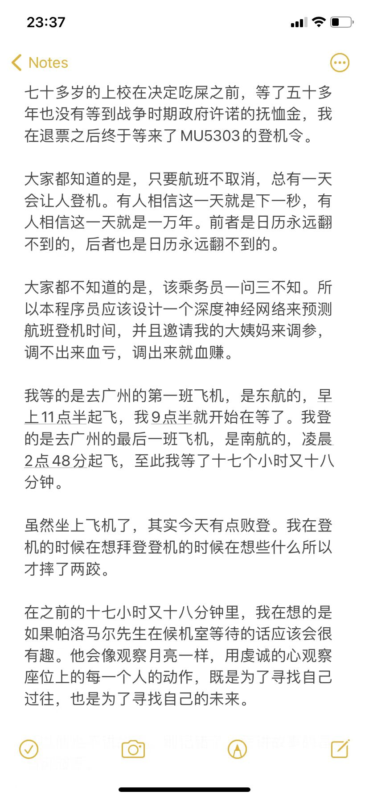

闲话闲说频道
2023
- 09.30
关于闲话闲说这一词，除开受到阿城的启发，也有一些罗素的缘故。罗素写过一篇文章，叫做In Praise of Idleness，是用来赞颂闲暇的。他说以前的人们一天工作八小时，但是后来工业化有了机器之后，八小时能干完的活只需要四小时。按理来说，四小时就足以让人们维持之前的生活。但是工人们仍然被要求工作八小时。虽然生产效率增加了一倍，工人们的生活并没有快乐一倍，而休息时间也没有增加（老板的快乐增加了一倍）。究其缘由，竟是人们从小被灌输要勤劳的概念，连罗素自己也不例外。可是他醒悟了，畅想四小时工作制会带来诸多好处。比如说，八小时的工作后人会很疲惫，只能享受被动的娱乐：看电影、听广播、刷抖音、被口交。而如果只工作四小时就能吃饱穿暖，那人们就会安排自己认为值得做的事情，享受主动的娱乐：跳广场舞、游山玩水、画画、做科研、闲扯淡。如果年轻的作家需要写迎合大众口味的文章来实现经济独立而后再进一步追寻惊世骇俗的作品，那么当他经济独立时，他可能已经失去了能做出惊世骇俗的工作的品味和能力。而如果他只需要每天工作四小时就足够让自己过得舒适，那么他每天都可以有闲暇来磨练自己的写作能力。作家只是一个例子，我也可以说画家。更加宽泛地说，每天工作只四小时会更充分地让心怀理想的人实现自己的梦想，推动文明的进步。
换在现代来说，大语言模型能否提升一倍生产力是一码事，而如若真能，也并不代表我们每天工作四小时就够了。码农仍然需要每天工作八小时，博士仍然需要每天工作十二小时（误），由于生产力的提升大大简化工作，码农的工资会减少，即使他使用新的工具为公司创造了双倍的价值。这就是为什么罗素呼吁说我们已经愚昧了很久，但是没有理由再愚昧下去了：Modern methods of production have given us the possibility of ease and security for all; we have chosen instead to have overwork for some and starvation for others. Hitherto we have continued to be as energetic as we were before there were machines. In this we have been foolish, but there is no reason to go on being foolish forever.
- 09.12
- 听说每个人都有一次改过自新的机会，所以近日我做了一些思想改造，希望给自己续一秒，能够再有机会时不时写一些文字唠叨唠叨。自己水论文别人不爱看没空看，而我听说八卦新闻风流韵事梅酒英雄却比所谓的顶会顶刊最佳论文更加卖座，所以不如重新开张，转型为闲话闲说频道，有空就来来扯扯淡。要是成天扯淡，然后读博被退学了，这也没什么大不了的。我随便就换一条赛道，向吴军学习，把本微博汇编成什么科研之美闲者之光，从论文作家转型为说唱歌手，不费吹灰之力，这也没什么不好的。
- 03.21
- CVPR的文章收到了一个Highlight。这个就很玄学了，我完全没有期待这个事情，甚至怀疑老板给我走后门。当然，我老板应该完全不知道走后门这三个字怎么写，这个也不能怪他，只有中国人会写这三个汉字。如果说要反思的话，我感觉这一两年搞下来每次投文章收到的评论总是没实验或者实验不够。审稿人总要我加实验，加就加吧，却没有告诉我要加什么实验，为什么这些实验会对表达文章的观点有帮助，这就好像叫别人脱了裤子放屁，放就放吧，但是没有告诉他为什么放屁需要脱裤子。排除掉放屁可能会把屎蹦出来的原因之后，我觉得这种现象会出现主要是因为我把文章投到了不合适的地方，消费者群体没有选好，产品当然不好卖。下次我投CVPR做十万个实验，希望能大卖特卖。
- 03.17
- 若是有人问我读博的期间赚得少干得多，如何保持身心健康和正确减压，我会建议去看看华尔街之狼学习一下生存经验。这部电影里，人们由于工作压力大时间长，需要每天嫖三次娼吸三次毒来保持脑袋清醒。由于博士生很穷，没有钱去吸毒嫖娼，我只能退而求其次，推荐朋友们每天看三次PornHub喝三杯咖啡。如果实在是没有钱喝咖啡，可以调整为看六次PornHub，完全免费。但如果体力不支的话，最后的策略是听音乐，音量调到最大，什么歌最嗨就听什么。
- 03.14
- 写文章有时候需要一个爆炸性的开头。像这首歌「So What」，开篇就跟你说，I guess I just lost my husband。这个够爆炸了吧？所以火。这也是我为什么会在最新的文章开头写，“The ambition of building intelligent machines that are adaptive and self-improving over time has given rise to …”。虽然intelligent machine这个词是直接抄PAMI的“Machine Intelligence”，但是这个还算比较爆炸了吧？可是我老板上来就把我的灵魂词汇ambition改成了goal。这就导致了我们这篇文章最后得到的分数还是不够爆炸，也不一定会火。
- 02.27
- CVPR中了一篇文章，纸上谈兵还是很快乐的，温哥华门票到手辽。不过希望以后少写点文章少吹点牛。
- 01.06
- 在我老板最近参与了一个讨论里(视频的第八个小时之后)，如果他把皮鞋换成拖鞋的话，就基本上是开组会的姿势了。
2022
- 12.31
- 很惊讶，我来美国已经一年半了。可我还是像从前一样一事无成不学无术，一天一天赖过去，不知虚度了多少光阴。有很多重大的科研课题要做，可是都没有去做。有很多山水想要去游玩，可是都没有去玩，就连驾照也没去考。有很多书想看，可是都没有去看。有很多菜想做，可是都没有去做。宽恕自己是最容易的，既往不咎了，希望新的一年能有更多收获。
- 12.29
- 古人的教诲是有点难学会的。一方面我们要长话短说，短话别说。另一方面我们要丑话说在前头。如果我有长丑话要说，就真不知道该从何说起了。
- 12.28
- 小红书做菜视频真是有问题。那些炒苦瓜的上来就教你苦瓜如何炒不苦，可是如果不想吃苦的为啥要炒苦瓜而不炒香瓜呢？我的意思是说，很多文章就是因为这样最基本的问题没有回答清楚而遭到拒稿，但这样的问题就很刁钻很难回答——我只是想水一篇文章而已。
- 12.27
- 一亩三分地是真的不像话。网站卡的要死，会员五六十刀一个月，主要的功能就是看别人的帖子细节，比如offer工资。我都不知道为什么有人会买。看到别人的offer不等于自己拿到offer，除了用来意淫之外没有任何作用。
- 12.14
- 狼来了的故事就是这样的。三月说四月解封，四月说五月解封，五月说六月解封，但是一直都没解封。所以十二月全面解封之后反而没人出门了。
- 11.24
- 春学期放春假，秋学期放感恩节，打个折算一下一年就上六个月课，学费张口就是五万刀，录取名额基本靠抢，收到offer谢天谢地，美国大学真是厉害。
- 11.23
- 我真的不该接ICASSP的审稿，一下子给我分配八篇文章，和我的研究方向一点关系都没有……我希望CVPR别给我整太多。
- 11.20
- 我想象力是真不太行，实在想不通为什么continual learning一个这样的问题可以发这么多文章。但是我悟性好像还可以，扫一遍所有的标题我大概就知道啦，他们的标题都是一样的：我是调参侠。好了，明年这个GitHub Repo应该会加入本调参怪的一篇文章。
- 11.18
- 投了一篇文章，都不知道自己怎么写完的，最近基本上都在做七里八里的事情，一个月审了十篇文章（5篇ICLR，5篇AISTATS），做了几次作业，改了几份ppt和海报……科研原来真的只是兼职工作。由于有这么多乱七八糟的事，直到最后一天我都没有机会跟老板开会讲讲我到底做了什么，然后他只能抓着overleaf一顿猛评。如果说要反思的话，或许最近在实行新的写作方式，不再写什么related work然后分段method A method B。这么写或许没错，或许能把文章写清楚，这样划分类别的写作方式很容易生硬地打断文章节奏，很难写出一个流畅的故事。另一方面，这样写的人多了，我再跟着这样就显得很傻逼了。说句实话，很多文章的related work基本上是凑数的，和文章内容或观点八杆子打不着，是为了凑够八页才加上去的，这跟每篇 GAN的文章里面很多图片是同样的功效。请大家回忆一下高中作文跑题扣多少分，虽然我经常跑题（比如现在），但我记性也不好。在我看来，写related work这件事就很纯粹，能支持（或者反对）我想表达的观点我就讨论，否则就不必多费唇舌了。在写ECCV那篇文章的时候，related work章节基本上被我省略了， NeurIPS文章讲related work的方式也异于寻常，不过基本上也没有审稿人说我 related work没讲清楚的——说明这样写或许是可行的。
- 11.10
- 在我不算长的审稿生涯里，这次终于被分配到了一两篇不能说差的文章，抓着它们怼了一顿之后把分数从5分提到了(无法被选择的)7分。
- 08.25
- 我最新的作品已经放在arXiv上了。分数666，与spotlight无缘，但这个分数算是吉利讨喜。总觉得自己rebuttal向来很失败，从来没有审稿人愿意提分，即使这次三个审稿人挑不出任何毛病。本文有如此结果，主要原因是写得太诚实了，也就是说，文章清楚地写着，我们这就是想水一篇文章:P。另一方面，既然写得如此明白，还拿到了666的分数，这就是本文的高明之处，所以感兴趣的读者可以去读一下。最后呢，之所以写这一篇文章，主要是因为要了解一下相关工作和证明思路，为接下来解决更重要的问题打一个基础。希望接下来几个月能在这方面有所突破。
- 08.22
- 这个暑假不知道怎么就过完了，去参加了两个会议，考了个 Qualifying Exam就过完了，科研也没怎么做。在美国的第一年也不知道怎么就过完了，水了三篇文章五门课就过完了。想要做的事情很多，时间过得很快，我得抓紧了才是。
- 06.01
- ECCV的rebuttal前几天交掉了。今天也看到自己审的稿子的rebuttal。怎么说呢，我审的五篇文章，一篇撤稿，两篇连rebuttal都没有交……基本上其他的Reviewer borderline的时候我直接一个reject。这样喊打喊杀的审稿方式可不是我提倡的，中国人都这样，这个叫文革遗风。而我受这种遗风影响尤其严重，有一份对于我完全不熟悉的领域的文章的审稿意见中，我发现我写了“I am an expert in this field”……其实我想说的是“I am not an expert in this field”……社死归社死，我也是时候该反思一下，写审稿意见需要客气一点……
- 05.23
- 寒假不科研的后果就是ECCV文章写得差强人意，然后被reviewer怼成了筛子，如果我多花一周在这篇文章上面，结果可能会很不一样。过去的事情无所谓了，这次暑假可不能再荒废。我反思ECCV文章写的不太合适而CVPR和 NeurIPS写的好一点的的原因有两个。一是CVPR写的时间长一点，而NeurIPS都有人和我交流写作。二是ECCV的latex模板太垃圾了，这次无论结果如何，以后我都不会再用ECCV模板写文章。
- 05.18
- NeurIPS文章提交掉了。这次我的博士后合作者和老板改的算是很用心的。听说今年NeurIPS有一万三千多个投稿，不过我自我感觉很良好，认为我们的这篇文章不可能会被拒。可是虽然接下来还有五篇文章想写，我老板已经对我下毒手叫我做一个奇怪的课题了……我希望能够顺利毕业。最后反思这一年来似乎摸鱼的时间有点多，寒假就一直在摸鱼。希望暑假能够把生产力提升到新的层次。
- 05.15
- 不是很想改文章补实验了……希望我顺利熬过这两天deadline。听说 ICML今年审稿很荒唐，然后我就发现TMLR这个新期刊的理念和审稿方式很不错，已经迫不及待地计划暑假投一篇过去——我刚已经把latex template下载下来，把abstract写好了……喜新厌旧是不行的，还是先收收心把NeurIPS整完，然后再去想暑假科研的事情。不过我又在想TMLR这样子把action editor的名单列出来会不会出现拉帮结派的现象，就像北大那个家伙拉八个人的 meta-reviewer的群一样。当然，如果大家都抱着这样的怀疑态度，那也不用做事情了。我回头想想我收到的所有审稿意见都算比较正常，就很容易继续想着是不是别人投的文章其实有问题然后怪到了审稿人的身上，因为读者一般提出意见，基本上是作者的锅。自己写文章的时候就该做好准备了，得让各式各样的审稿人都觉得满意才是，能在百般挑剔的奇葩审稿人手里拿个 accept才算是本事（当然今年很多吐嘈meta-reviewer的）。我觉得今年 NeurIPS投稿数可能过万了，也是挺惨的，专业接盘ICML。这么想来ICLR的文章质量可能会高一点，大家暑假有更多时间打工。但是我也不敢确定，因为CVPR 就提供了一个反例。
- 05.09
- 虽然我没怎么写过CVPR论文，但是见过许多猪跑，所以我也有积累 CVPR论文写作经验。首先abstract，related work和introduction可以占个两页半。示意图网络结构图加上conclusion占一页，再做三页半实验。这里一共就 7页了。为了写完这个八股文，我们还需要1页来讲讲自己的method，几个 loss公式摆上来就大半页了。所以写这样一篇文章有大约半页是需要动脑筋的。其他的页面打工就完事了。不过这样写文章有个毛病，前面吹了半天，然后自己的方法就写了半页，这就好比是男人说自己精壮，然后被发现早泄一般。读者都还没爽到呢，这篇文章就结束了。之所以审深度学习的文章几分钟就能审完，就是因为文章早泄，于是审稿人一个人也就失了兴致——总不能每审一篇文章就手淫一次吧。这样集体早泄当然是不好的，为了改正这个风气，我这次审ECCV的文章的时候都痛苦地坚持了几个小时，并且全给了borderline及其以下的分数：这些文章最大的问题一概是没有证明自己不会早泄，除此之外还有个别文章拿别人的鸡巴当自己的方法。如果后人想评价我的伟大之处，我猜这就是我对这个世界的贡献了。
- 05.05
- 好雨知时节，当春乃发生。随风潜入夜，润物细无声。杜甫都说了，润的话还是要悄悄的，不带走一片云彩，可不要像贾扬清一样还发个推特。
- 04.27
- 审稿人一般来说都具备如下素养。这篇文章引用了我的所有文章，看来得给个strong accept，只引用了四篇，weak accept，两三篇，bordline，才一篇？weak reject并推荐给作者几篇自己的文章，一篇都没引用？strong reject并且再加上一句本人是本领域专家，也就是不服来辩的意思。这样的审稿方式是真性情的，但是不够聪明。再聪明一点的话，在推荐自己的文章的时候夹在其他七八篇一起，让别人看不出来自己有没有夹带私货。这样下来，一年审稿20篇就能给自己带来50个引用。这样好像不太划算噢，光靠这样做，即使再怎么苦心孤诣，也没法达到一万的引用数量。所以还是踏踏实实审稿，踏踏实实科研吧。做出让人（自己）佩服的工作，写出让人（自己）享受的文章，才是我们科研人员应该考虑的事情。
- 04.26
- 做synthetic data experiments的时候就像看黄片，虽然前头给我们折腾一下剧情，但我们知道女主角迟早脱光光——还没开始做实验呢，就大概知道会是什么结果了。做real data的实验会得到什么结果就完全不好说了：我们完全不清楚女主角最后到底会不会脱光。既然不清楚，那大概就不值得看了，而且那些说自己做mathematics of data science的人基本上就是做做synthetic data experiments就完事，我也不妨来一个东施效颦。如果审稿人问我为什么不做real data experiments我就回答说在下是synthetic data scientist，在本领域发过三篇文章。也就是说，I am an AV data scientist，有3P经验。不过我老板不许我说有3P经验，这样显得不谦虚，所以我就只好老老实实做几个real data experiments了……
- 04.19
- 我又从朋友圈知道马尔克斯的祭日到了。我仿佛回到了14年的四月，白天猛玩游戏而晚上躺在床上猛看霍乱时期的爱情并为此哭泣。好不容易看完了，那时候我就想，要是马尔克斯来中国，我一定会准备一条烟，猛踩着我的单车带烟去孝敬他一下，因为国内长辈去见自己尊敬的人的时候都是这么做的。可是我才这么想没多久，就知道他去世了。于是我觉得，四月似乎不太是好时候，春天来了，他们却走了。对了，马尔克斯的书也是我时常翻的。什么？朋友圈又报导另一个名人的祭日？我追悼会都开不过来了，只好把他的名字也忘掉。也就是说，下辈子别取名叫做爱因斯坦了，否则每当自己说我爱因斯坦上辈子是一个伟大的物理学家的时候都会觉得这是一个变态：你喜欢因斯坦跟你上辈子有什么关系？到现在我觉得呢，我应该要有更伟大的梦想，而不是为逝去的人哭泣。去读我从来没有读过的最伟大的作品，站在巨人的肩膀上，去尝试写我永远也写不出来的著作。这样以来，一千年以后的相关读者看到我的文章能会心一笑——噢，精彩，原来这人原来就是想水一篇文章——就像我们看蒙田选集也会心一笑一样。我当然是在吹牛，因为一千年以后人们也不知道会使用什么语言，而我们现代人看鲁迅的文章就已经看不大懂了，同时也因为我是一只菜狗，而狗嘴里吐不出象牙。
- 04.16
- 他奶奶的ECCV给我分配了5篇文章review，没一篇是我感兴趣的。这个月我已经准备好吃屎了。
- 04.14
- 其实我这时应该在写NeurIPS的草稿，但是我实际上却在看闲书。王小波在前言里说红拂夜奔是关于有趣的书，我现在读来却觉得这本书满是悲怆。洛阳城和长安城其实都是北京城，就像卡尔维诺写的二十多个城市都是意大利一样。虽然是讲隋唐时期，但也可以当作是中国近代史来读。李卫公在北京城里走着，「再往前走，有好多人手持蘸了石灰水的刷子，把烧得乌黑的废墟都刷白了，再往前走，就是一片白银世界，回头看也见不到一个死人，一点火烧的痕迹，一点血。卫公眨了几下眼，以为见到了幻象，喝了很多酒之后，看见一些幻象也属正常（没喝酒有幻象也属正常），所以我们还是把它忘了吧」。
- 04.10
- 今天是王小波的祭日（这种消息我一般都是从朋友圈知道的）。他的作品我大多数都看过，到现在闲时也会翻一翻。最开始乍一看，王小波应该算是理工男写书的典范：绉不出华丽的辞藻，凭的是逻辑和想象力取胜。后来看多了，发现他写杂文都会遵循特定的模式，这可能是受到某种写作训练的缘故（就像我们写科研论文一样），也可能是需要在固定时间写点故事发到杂志上谋生。意识到这一点之后，我既可以觉得他的杂文不再好看，我要学就去学写杂文的技术。我也可以觉得读到类似的讲故事模式其实无所谓，我看下来觉得有意思就行了，否则遇到爱不释手的书也不必重读，鸡鸭鱼蛋也不必重吃了。需要补充的是，我觉得王小波的小说比杂文写得好很多，并且以我的路人水平，并不能看穿他写小说的套路。这可不能怪我没基本的写作素养，只能说样本数量太少了，而小说都很长维度太高，没法把LiangzuNet训练好。
- 04.08
- 我们所学过的写作技巧里比较好用的是排比句。排比句的好处是让读者很容易很猜到接下來作者接下來会写什么。一个例子是我老板给学院写的 院长寄语，他用排比简述了三次「工业革命」的意义。排比是如此地简单有效，以至于有人说“Use parallels wherever you can”。当然，用的人多了就显得俗套了，于是在我最近看的写作书里，作者建议道：“Establish a pattern, then give it a twist”。也就是说，先排比一下，再做一个转折。也就是说，文似看山不喜平，我们应该写“Boom, Boom, Bang”，而不是"Boom, Boom, Boom"。一个中文例子是奇妙能力歌，其中陈粒写道「我看过沙漠下暴雨，看过大海亲吻鲨鱼，看过黄昏追逐黎明，没看过你」，这里前三句是establish a pattern，最后一句「没看过你」就是give it a twist。另一个例子是王小波在「红拂夜奔」里写的：「…比方说，他发明过开平方的机器，那东西是一个木头盒子，上面立了好几排木杆，密密麻麻，这一点像烤羊肉串的机器。一侧上又有一根木头摇把，这一点又像个老式的留声机。你把右起第二根木杆按下去，就表示要开2的平方。转一下摇把，翘起一根木杆，表示2的平方是1。摇两下，立起四根木杆，表示2的平方根是1.4。再摇一下，又立起一根木杆，表示2的平方根是1.41。千万不能摇第四下，否则那机器就会哗啦一下碎成碎片。这是因为这机器是糟朽的木片做的，假如是硬木做的，起码要到求出六位有效数字后才会垮」。敏锐的作家或者作词人不需要知道“establish a pattern, then give it a twist”的口诀，因为他们能感受得到怎么写是好的。但如果我们做解析的要解释为什么这么写好，现在就有答案可以抄了：他们背过这个口诀。
- 04.05
- 最近读到的数值线性代数的好书是这本，一下午直接读了一百页关于特征值的算法。
- 04.02
- 张文宏的仕途在他说出国产车和国外车你买哪个的时候就可能已经被决定了。
- 03.30
- 我国五千年文化源远流长，以至于鲁迅在灯下漫笔写到的内容到现在还没变过。他有一些钞票，去换银子，他为值一百块的钞票换到了七十块钱的银子而满心欢喜，因为恰逢乱世，特殊时期，再不换就没得换了。他写道说“倘在平时，钱铺子如果少给我一个铜元，我是决不答应的”。而鲁迅不愧是鲁迅，这时候他反过头来想，“我们极容易变成奴隶，而且变了之后，还万分喜欢”。现在上海也是特殊时期，抢到菜了满心欢喜——即使菜价翻了个倍。其实很多东西本就是属于我们的，被剥夺了一半然后再返回一成，我们不应该为此感到快乐。你跟我讲特殊时期特殊政策是没用的，先把银元还给我再说。什么？想要请我去局子里喝咖啡？成，七十块就七十块吧。
- 03.30
- 上海这时候疫情此起彼伏，朋友圈一片哀嚎。以前我们说中国老百姓有智慧，是用“上有政策，下有对策”来形容。而这一份智慧似乎是向日葵，在暗无天日的时候终究是不太灵光的。我们可以想到的对策有很多，可以做的却很少。对乐观的人来说，这样其实也够用了。我们可以做的虽然很少，但是我们可以想可以说的却是很多的。
- 03.29
- 去年从上海飞广州飞机晚点时我到底在想些什么？

- 03.22
不知道那些用SGD解特征值问题的文章在证些什么。和MATLAB svd eig一比全露馅了。最搞笑的是这些文章还用eigs算出来的特征值当作 ground-truth…所以他们心里应该有数eigs应该快很多倍吧……虽然我在思考相关的问题，但是目前我没有看到SGD战胜基于Krylov subspaces的算法的可能。所以还是别搞什么特征值算法了，去找一些别的问题做吧。
我想很多文章可能是这样子来的：最开始觉得某个方向很有趣很promising，结果跳进坑里出都出不来，进坑这么久总得发文章，不然毕业/Funding交代不过去。在这样骑虎难下的情形中，只得勉为其难地水一篇文章，糊弄过去。 Paper is all you need，饭还是要恰的呀。
- 03.19
- 本科研民工最近打工打累了，易怒。读博果然是容易抑郁。不过这两天稍微缓了口气。准备睡了，明天继续打工，CVPR Camera-Ready还没开始准备，还有文章要review，还有期中考试要考，还有作业要做，还有……算了一个一个做吧……就很奇怪，我觉得自己很肝了，然后我得到的报告是上周平均每天的手机使用时间是4小时……《时间管理》做得不太行噢！但转念一想可能是听音乐听的，对一定是这样。
- 03.18
- 其实马老师的新书写的挺不错的，去年（或者是前年年底？）书刚出来的时候我一口气读了四章，流畅。相关领域的同学们应该去拜读一下，然后水点文章毕业。考虑到这本书以后可能被引用几千次，我必须申明一下我去年的作品可能是引用马老师这本书的前十篇文章。除了给自己贴点金之外，我可能应该说说这本书哪里好。我的评判标准很简单，读下来逻辑通顺让人信服有收获就是好书，读起来像吃了屎一样或者让人觉得吃屎更快乐的就是差书。这两类书我都读过，所以也算人生圆满了。我需要澄清的是，这并不能证明我吃过屎。同时逻辑通顺并不代表需要让人读得快，遇到数学内容密集的地方是需要慢下来的，就像你需要坐下来喝杯咖啡让生活慢一点一样。我的标准对其他人来说可能不太适用，因为是需要读了之后才知道好不好。而不读书却能得知书好不好的评判方式，我是不太知道的，这可能属于Deep Learning的范畴。
- 03.13
- 看看LeCun, Bengio，Hinton怎么被怼成猪头的：三个欧洲人跑到美国去，然后引进了欧洲朋友们文章里的想法，但是并没引用他们。没办法，深度学习领域文章太多了，引用不过来，只好就他山之石以攻玉了。这篇文章呢我是没有看完的，但是既然是发表反对意见，我就表示支持。
- 03.12
- 发现自己挺能作的。找了个深度学习的实习，然后整着整着就鸽了。扫了好几十篇深度学习的文章，细看了几篇，实在是受不了了，写得都是什么鸡巴玩意，噢基本上大家的模型都大同小异，甚至和三四年前比都没有特别大的变化。6年前的oral文章被遗忘了，然后同样的idea在去年又变成了oral。我很难想象要读这些垃圾文章然后跟着他们屁股后面做科研，把Github上稀里糊涂的代码抄下来涂涂改改，甚至还要怀着侥幸心理想着他们这么垃圾的idea都能发文章那我随便水一下也能发。这么做除了臭屁味我实在想不出能闻出什么别的来，除了学会跟着放屁说一大堆“噢our network learns …”这种自己也没底气的话我也不知道还能学到别的什么，learn你妈呢。请在写代码写下nn.Conv的时候想想自己为什么需要这行代码吧，答案是别人是这么做的而且别人发了文章，而我也想发文章所以我也这么做？毕竟谁都不是五柳先生，好编程的人怎么能不求甚解？这样也好，再次看清楚了自己真正适合做的是什么，其实我在三四年前就应该彻底想通我不适合搞这玩意，只不过现在因为想赚点钱的苦衷而忘记了自己的初衷，我确实需要反省一下自己了。当然，如果以后我带学生，指不定就忽悠着他们做深度学习，反正自己只负责故作高深地指点一番出出馊主意，垃圾代码全是学生写。别的不说，我漂亮主意还是挺多的。这么说来，当教授还是轻松，等学生准备好slides然后开始展示了，教授就只需要当选美比赛的评委一般评头论足一下：唔这个胸大，不错不错。教授的尊严就在于不能让学生发现自己没有给出如何丰胸的建设性意见，而学生的尊严就在于在展示的过程中不能让教授看出来这个胸是用硅胶做的。对，你没看错，我们科研人员就是在这种上下互博的诡异气氛中成长的。
- 03.09
- 要克制一下跟别人讨论科研想法,尤其是更加senior的研究人员。讨论完了之后他们说噢promising，要跟你每周开会，然后你发现活全部都是自己干。
- 03.07
- 本来打算今天11点组会的时候和让老板改改abstract和introduction，不过我得知他11点的时候还在飞机上，所以组会取消了……正因为这样，他就有时间在飞机上帮我把abstract和introduction重新理了一下。他的写作风格和我之前自己写文章时领悟到的很类似，但是他能在所有的句子中都贯彻这种方式，而我只要一嗨起来就会忘记这一纲领。最后的结果就是老板的abstract+intro比之前少用了十几个单词，但是有好几个地方改善了句子逻辑写得更清楚了。唔，我赶紧花点时间Reverse Engineer对比一下两个版本之间的区别多长点知识。
- 03.03
- CVPR文章2个strong accept和4个weak accept险险过关。虽然文章是花了时间写，可是做实验跟别人比来比去可太没意思——比鸡巴呢？我花了几天时间把实验糊弄了一下，结果被怼成麻花。平均审稿人是三个，系统却给我分配了六个审稿人，还是抓着附录猛锤的那种，CVPR怎么不把我这篇文章算作是两篇？我还倡议CVPR明年根据审稿人的数量来确定 Rebuttal长度限制，或者干脆把Rebuttal取消算了，反正Rebuttal完了各位都不高抬贵手打高点分数。总之呢，我写这篇文章时，是想着这个东西写出来不一定对大家有用，但是可能可以写出来让大家觉得很有趣，于是就这么写了。可能是被我这样实事求是的态度感动了，最后就是审稿人都说写得好，虽然并不是所有人都说得出来哪里好。看文章大概和看美女不太一样吧，你要是说这个美女生得好，总得有个缘由，要么就腿长要么就屁股大，而如果你说她有魅力是因为聪明，那绝对是撒谎。如果要实事求是的话，各位审稿人的意见其实都还是不错的，总体得分也还算公道，我老板说在他审过的几千篇文章里没见过这么客气的评论，大多数都是被怼出花。文章具体写得咋样长得咋样呢还是见仁见智，得由各位读者分说。噢对了，文章的最终版还没有准备好，这里就先跟各位看官卖个关子了。最后呢，我既希望CVPR给我评个oral，好让我吹一波牛。也希望还是就给我一个poster吧，在下就是做了一点微小贡献，大概还不值得脸红心跳地给个talk。不过各位听了别灰心丧气，更大的贡献和真正的好戏还要等到后头才上演呢，请稍微费心等待一下我最新最新的作品吧！
- 03.02
- 不知道为什么，收到ECCV的审稿邀请，我都没有投过这个会议的文章。之前ICLR也是。这让我觉得是我老板默默无闻推荐我审稿的……还是说哪个大佬欣赏我？哇，我暗自感激一下，以及对自己打工仔的命运默哀。
- 02.24
- 和老板组会完了摸摸鱼，让我做会梦好了。博士第一年发三篇文章， CVPR，ECCV和NeurIPS。这样一来，为了有进步，博士第二年需要发六篇文章，两篇 CVPR，两篇ICCV，两篇NeurIPS，少了一篇都谈不上有进步。为了继续有进步，我希望我第三年可以发九篇文章，多了一篇都称不上是时间管理大师。第四年十二篇，第五年十五篇。哇，太多了，不对啊，怎么有一种今日割五城明日割十城的感觉，不对不对，赶紧梦醒吧。梦醒了。妈的，干！不管怎么样我只希望我可以赶紧毕业，加油吧！
- 02.14
- 上课是一件很无聊的事情。就拿这学期的课来说吧，老师既然不好好备课，那他自然也别想要我好好听课——这给了我完美的翘课借口，闷声搞科研。那有人问我平时作业怎么办。简单的呀，老师用祖传作业，只改一个年份，那学生我当然也可以用祖传答案，只改一个名字。可是我独在异乡为异客，没有答案抄，有也懒得抄，那只好自己随便糊弄一下，让彭良祖的答案成为祖传答案了。又有人问我不去上课平时成绩怎么办，小心老师给我打个C。我当然无所谓，对于这类课程，我都是以其人之道还治其人之身，课程评价全给零颗星。而且，哈哈哈哈哈哈，我现在本事比以前大，他们应该没机会给我打C了哈哈哈哈哈。不过这还是不公平的。他们给我打C害得我申请不到学校，我给他打低评价却对他一点影响都没有。这个时候我就明白了，冤冤相报何时了，我还是得做个人，做个好学生。
- 02.14
- 没想到读个博士还能转学的。我也确实是在巴尔的摩这个地方待腻了，八月底去费城！
- 02.12
- 为了混个实习，最近看了一些深度学习的文章，于是发现做实验还真能做出花来。做实验么，好比是去暗算拥有十几年九阴真经修为的大侠，以有心算无心，怎么说都有胜算——这都还没算上别人站着不动给你打这一事实。这样看来，各位频频outperform state-of-the-art倒不值得惊奇。而如果没有outperform的话，这样的文章就看起来像一个刚上手打狗棒法的小丐，确实是该被拒稿再回炉重铸的——因为暗算对象甚至可能不是大侠。我目前得到的结论和钱钟书说的类似：对于丑文，细看是一种残忍。
2021
- 09.28
- 好多科研要做可是作业也太多了。
- 09.28
- 这次我审的NeurIPS文章全部被拒。有几篇我都没仔细看，给的是 weak accept。不过没想到NeurIPS要求挺高的……我觉得以后要仔细审稿，严于律人了:P
- 08.17
- 坐地铁去做核酸检测让我首次感受到上海早高峰的福报。在躯体被局限在四平方分米的空间的时候，似乎唯一的救赎方式就是掏出手机苦中作乐，在朋友圈洗涤自己的灵魂（当然，当我们拥有四百平米的房子的时候我们可能也会选择刷朋友圈）。在这样的情形下，大家都站在一起玩手机，人均网速就会变差，于是快乐也被平均了。所以我们要么是在争夺有限的快乐，要么是在分享有限的快乐。但是既然我们已经在为多占一平方分米而周旋久矣，那不如还是和气一点，让我们一起来分享快乐吧。我是小气的，不爱分享，也就是说我没有刷朋友圈。在这种情形下，我的快乐源泉来自于创造和思考数学问题 — 读者将马上发现这正是我的痛苦所在。简单来说，这个问题是关于数数的，而且它很自然就出现了：我所在的车厢到底能容纳多少人。假设每个人占地四平方分米，那么车厢面积除以四就是我需要的答案。遗憾的是，这个论证只对了一半，也就是半对。因为这个时候车門开了，没有人出去，但是有一个人进来。由于车厢总面积没有变化，所以我们的人均占地面积变小了，可能变成了3.8。这个数字听起来不错，但是随之而来的问题是，3.8的人均面积是在这个情况下的最小的可能的值吗？我想应该是吧，这里实在是塞不下任何人了。可是车門又开了，没有人出去，但是有三个人进来。这意味着我又没有做对这道题，我们的人均占地面积由3.8锐减至3.7平方分米。更进一步来说，这说明我受到了精神和肉体的双重打击。我很坚强，我马上释怀了。我对自己精神的安慰是，对某个问题给出紧的下界通常都是很难的。我对自己肉体的安慰是，获得可以自由移动的空间通常也是很难的。不对不对，我就不信了，有什么难题还能难倒我不成？经过反复琢磨本天才终于见着了曙光。到了隆德路之后，一半的人下车了，我的地盘野蛮生长到了8平方分米，又过了两站，又下车了一半的人，并且我获得了一个座位，也就是说我的疆土再次翻番，由此我陶醉在这种原本只属于成吉思汗的成就感当中。接下来的故事是不难想象的。当其他人全都离去之后，我所在的车厢人均占地面积即为车厢面积。同时也不难发现，车厢面积是我们先前考虑的问题的上界。这样说来未免有些简单，这个叫求下不得，求上有余。但是读者千万不要忽视一种特殊情况：如果我不把自己当人的话，我所在的车厢人均占地面积为正无穷，因为此时我们将车厢面积除以零。但是除以零时常是不可取的，于是这种特殊情况没必要再考虑。所以呢，不失一般性，大家不妨假设我是人。扯了这么多我要说的是今天我要坐飞机去美国了。我只希望这班飞机不要把我送到火星就好。
- 06.20
小时候，我们讲究readership，值得炫耀的是我们读过什么书、看过什么电影、去过什么地方、享受了什么好处。Lady Gaga你都不知道？你咋机器学习的基础书都没读过？长大后，我们更爱authorship，考虑的全是写过什么文章、解决了什么问题、做出了什么贡献、编出来了什么剧、电影演的好不好。 readership讲的是消遣，authorship讲的是创作。不过呢，我们这些写文章的，不考虑readership也不行。一方面我们得考虑文章的目标读者，另一方面我们也需要读书旅游看电影作为消遣。这样一来，我全都要，真正想要拥有的原来是“reathor”ship。
我们爷爷那一辈人图的是填饱自己的肚子。填的方式只有一种，那就是把东西往嘴巴里塞。可供选择的在于用什么填，有人用树根有人用肉糜。我们父亲那一辈人图的是填饱自己的袋子。填的内容只有一种，那就是钱。可供选择的地方在于用什么办法搞钱，有人用脑子有人用身子有人用章子。我琢磨着我们这一辈人该图一个不一样的东西，用不一样的方式，填不一样的内容，这样才算创新进步。与此同时我们不能忘本，要继承先人遗志，在吃饱饭的同时赚够钱。简而言之，我们全都要。
我们曾经有梦，想去国外学校学知识、长见识。以前我们的口号是“师夷长技以制夷”。也就是说，我们想先把师傅的本事学下来，然后再把他脖子抹了。也就是说，除非是个傻师傅，否则不收坏徒弟。现在我们认为祖国强大了，但仍想去国外学校学知识、长见识，由此而来的口号是“用脚投票”。我们既怀念国内的朋友和烟火，又舍不得国外平衡的工作和生活。简而言之，我们全想要。
乐观主义者认为 ignorance is bliss，消极的人觉得 ignorance is power。相信这两点之一的人也一定相信人们不该读“哀吾生之须臾”与“哀民生之多艰”—— 既然你有自己的痛苦，就不要再去接纳苏轼和屈原的痛苦了。同时也一定相信，人们不该知道那个人为何抹了自己的脖子，不该知道那个人为何抹了别人脖子，不该提前了解本行业薪资待遇，不该知道房价到底多高，不该知道自己碌碌无为的老板在北京有三十八套房和三十八个二奶 —— 即七十六奶 —— 不该知道“凤凰男”和“剩女”的含义、“三胎”和“躺平”的缘由。在我们姹紫嫣红的童年里，我们不知道这一切。
- 06.11
- 准备回家过端午了，之后不一定会再回上科大。毕业了，我就好比是墨迹从书卷里渐渐淡去，悄然无声地。
- 03.13
- 拖了差不多两周，我接受了Rene发的offer。如果说五年听起来好像不多，那就说半个decade。原本觉得，巴尔的摩是我最不想去的城市，假设有约翰霍普金斯的录取通知也是用来保底当备胎的。目前虽然还有几个学校的通知没有发，但不打算再等了。直接接受吧，犹豫就会败北。目前我对巴尔的摩的描述是“希望与罪恶交织”，a city of crimes and hope。这里拥有全美国甚至全世界最好的医院，而两个街区之外，毒品、枪支大行其道。在地狱的天堂里，我更容易比华盛顿的政客和华尔街的银行家感受到美国社会的撕裂(disparity)。See you soon at Baltimore。
- 02.21
- 在苦痛的日子里，我想起了罗素字字珠玑的文章，Political Ideals。他说这个世界上有两种“财产”(goods)，其中一种是可以被人拥有的，另一种是可以被分享的(There are goods in regard to which individual possesion is possible, and there are goods in which all can share alike)。一个人的食物和衣服并不是另一个人的食物和衣服，如果供应短缺的话，一个人所得到的必定就是另一个人所失去的(The food and clothing of one man is not the food and clothing of another; if the supply is insufficient, what one man has is obtained at the expense of some other man)。这描述的是物质财产，就其性质而言，博士offer也算是其中一种。但还有一种财产是精神财产。一个诗人并不会防止他人成为诗人，正相反，他会创造出一个氛围，让他人也变成诗人。如果一个人对他人充满善意，这并不意味着世界上的善意就少了一分，正相反，他反而能使周围的人也变得善良。对应两种财产的是两种“冲动”(impulses)。一种冲动是拥有 (possessive impulses)，就是说想要取得无法被分享的事物的欲望。另一种冲动是创造(creative impulses)，也就是想要创造出更多可以被分享的财产。接下来，他强调，最好的生活应该是那种创造的冲动占最多的比例，并且拥有的冲动占最小的比例(The best life is the one in which the creative impulses play the largest part and the possessive impulses the smallest)。我的卑微的补充是，拥有的冲动占比越多的生活越是会使人感到痛苦。不要贪婪，忘记房子忘记车子，你敝帚自珍的精神世界是你的无价之宝。
- 02.21
- 要知道一个人有没有长大，不是看他有多少云淡风轻，而是看他有没有过夜不能寐的晚上。如果要知道他到底长得多大，除了脱掉他的裤子外，还可以看他有过多少个这样的夜晚。
- 02.12
- 十二点刚过，朋友们，于是我们来到了牛年。在千家万户都在掐着点点燃希望的时候，我跑到家后面的池塘边，在黑暗里仰望着由烟火映出来的姹紫嫣红世界。在忽明忽暗的光线下，在宁静和喧嚣交替的间隙中，我感到无尽的痛苦。我长舒一口气，脱下了裤子，把过往二十多年一把尿出来。我想，第二天一大早，它们就会被深埋地底，如同不曾存在过一样。
- 01.28
- 对郑爽这件事情我当然没什么要说的，因为我不是他老公，不太清楚事情的来龙去脉。我想说的东西如下。经常写学术文章的朋友会感受到，描述别人的工作有两种方式，一种是夸赞，一种是批判，而且往往两种都对。道理很简单，任何事情都有好的方面和坏的方面。所以写文章的人或者是发布信息的人考虑的是他想让人们看到好的方面还是坏的方面，他就基于自己的目的写。读者方面呢，他可以选择接受作者的观点，也可以不接受作者的观点。以盈利为主的内容发布者当然得从读者爱听的角度写，不然怎么会有人点赞。你给爱吃扁粉的人下一碗圆粉，你家粉店非倒闭不可 –— 除非遇到我这种既爱吃扁粉又爱吃圆粉的顾客。但时常就是真言逆耳，你讲的太真反而没人乐意听了，所以各类新闻有失偏颇是意料之中的了。钱钟书对此更消极，他说，“不受教育的人，因为不识字，上人的当; 受教育的人，因为识了字，上印刷品的当”。他说的自然有道理，但是你看，我可以完全不说“钱钟书对此更消极”，而说“钱钟书比我更一针见血”，或者是“钱钟书早就看穿了这一点”，或者是“钱钟书倒是很幽默”，这样一来，读者对钱钟书的印象就会完全不同。这就取决于我乐不乐意让钱钟书受大家喜欢了。那我们现代读者得要怎么预防被媒体灌输的偏见呢？一种方式就是让自己当一回古代的皇帝，集思广益，你多听听看不同的观点，除了看人民日报之外也看看日人民报，既查康熙字典也查新华字典，听取各方意见之后再自己琢磨，就更容易得出中立的结论。我用的是另一种方式，那就是什么都不看，做一个傻子，省心。我都是傻子了，对吧，谁也不乐意来骗我，让我上当，那多没成就感。我当然是说真的了，我已经够糊涂，爱好自己爱好自己身边的人就已经够难了，哪还有时间去折腾大明星的糊涂帐。
- 01.28
- 前些天跟着学弟们蹭了寇老师一顿饭，获益匪浅。我算是很负能量了，做什么事情都要叫苦连天，去他妈的骂个遍。但寇老师倒是很正能量的，于是我发现积极乐观地表达自己的情绪真的可以感染别人，让大家都会感到轻松。这样是对的。人一生就是有苦有乐，人就是有优点有缺点。去宽恕去温柔去理解，别埋怨别愤怒别小气。
- 01.28
- 以前写作会坚持用新颖的词，比文章整体结构而言更执着于每一字每一句，偶尔照顾照顾句间的衔接。最近的领悟是段落之间的呼应盘旋最能打动人。不论如何，接下来再精雕细琢一周我就解放了。当然，ICML deadline 之后预计会听到很多鬼故事，主要是会陆陆续续收到博士申请的结果。我要求其实很简单了，希望自己别失学。
- 01.28
- 新的一年，本微博也早该翻开新的一章。
2020
- 12.27
最近流行看后翼弃兵学赌棋 (The Queen's Gambit)，于是我就去看了 千王之王学赌牌 (King of Gambler)。 这部电视剧里面讲的是旧上海形形色色的人们的生活。他们在忠与义之间取舍，在新仇与旧恨当中盘旋，顽强的生命像小黄花一样永远不会被锤倒，富贵的奸人在自我城府中迷失又在被算计后流亡。总的来说，它讲的是对原则的敬畏和挣扎。赌的原则嘛，赢就是赢，输就是输。有一个无恶不作的反角愿赌服输后挑断自己的手筋，也有输不起的混子栽赃陷害胜利者。而那个被污蔑的胜者呢，他只需在法官宣判死刑之后淡淡地回击一声，你们输了。对于栽赃和枉法者来说，这就是排山倒海的雷霆一击。看看，你们千方百计枉做小人，却永远没办法击溃他无可战胜的灵魂。当一个人对自我原则的维护超越生死，成王败寇的野蛮哲学便不再适用，而他会永远会得到人们的敬佩。这部剧当然也讲爱情。那里的人们啊，爱的好巧又爱的好悄悄：他突然就爱上她了但是他爱上她这件事连他自己也不知道 —— 只有观众知道。
赢就是赢，输就是输。这句每一集都会重复几次的话里的味道，放在20年后的今天，可真是让人回味无穷。
- 12.27
在老板的帮助下，我把一篇理论文章投了出去，希望能得到编辑们积极的回复。在投了之后，老板告诉我说，他对这篇文章感到非常高兴，这是一个伟大的工作。他还说这篇文章是我找博士岗位的门票，可以让我去几乎任何地方，还要我确保招生委员会和感兴趣的教授注意到这篇文章。当然，这是我目前最好的理论工作了，这篇文章里面使用到的证明足以让人心花怒放。显然，我不是最有趣的数学家，但是如果非要吹牛的话，我这篇文章里的证明是我看过的所有数学书里最有趣的证明。
这篇文章的简化版也即将写完了，主要面向计算机领域的读者。希望各位朋友们会感觉有趣。目前的科研计划是在接下来的半年完成一个算法工作，这将是我研究生阶段提出的最好的算法。加油噢。
- 11.17
- 写论文的时候收到邮件说我的某个推荐信写手教授已经提交了他的推荐信，十分感动。申请的季节，祈祷明年不失学。
- 10.25
- 明天去杭州，回紫金港看看。大疫当前，希望他们让我进去。
- 10.25
- 我变得有耐心了。被上纽大的小朋友们问两三个小时问题也不会觉得生气。有点累倒是真的。
- 10.25
- 我想睡得好一点，于是就睡得早一点。但是后来发现，睡得早不代表睡得好，头发不仅可以变白还可以变少。
- 10.25
- 能大宝是一个可爱的傻姑娘。她应该永远可爱才好，而且我也想不出什么原因可以让她不可爱。
- 10.25
- 我的生活里功利性很强的话题越来越多了，大多是欲望的衍生物：文章股票钱房车。做一个成年人，接纳它们吧，让它们推动生活前进。但是永远记得要怀揣着一份人文精神和关怀以作为草原的星火，让它被裹挟在欲望的洪流里生根发芽。于是在生命中的某个时刻，你可以感召异己者，相逢同类人。正如在我和老板的一次博弈中，当我说到“如果你去那儿的话我也会去”的时候，他感到惊讶，甚至还一度让我重复了一遍这句话。他似乎了解人类，但是不了解我。总之，我希望他由此而感受到人文关怀。
- 10.25
- 叔本华悲观地说，要是一个人的欲望得不到满足，他就会感到痛苦。但要是被满足了，他就反而感到无聊。我觉得呢，人的一生是偶尔在这两种状态里来回迁徙，更多的时候却是并肩与这两个极端前行。她可以学好物理却学不好英语。你象棋弹得好但麻将打得差。我聪明一世糊涂一时。他精神浩瀚肉体糜烂。
- 10.13
- 有个大连理工的研究生上吊了。我大二那年青溪有人因学业和感情两方面的原因跳楼，那时和朋友们讨论的腔调是，既不该为爱而死，也不该为考试而死。我偷偷写了一篇日记来纪念这件事，表达愤恨，疑惑，和理解。我的一个室友在大一下学期的时候平静地告诉我，他在期末结束的时候差点跳下去了。我的另一个室友在大四的时候平静地告诉我，他想过要跳下去，但是不敢。我和他们的不如意是或许有几分相似的，可是我从来没有像他们这么想过。我想的是，可以为爱而死，也可以为考试而死，但是不必刻意地，匆忙地跳下去。死亡是做事情的一种方式，但其实还有很多种，死亡不好的地方就是呢，如果选择了用死亡来做一件事，就排除了其他的可以完成这件事的可能。所以，在穷尽一生的可能性之前，不必选择死亡。
- 10.01
- 为74岁的人患病的消息弹冠相庆，更有甚者称之为国运，这就是我看到的中国。
- 07.25
今天毕业典礼，说几句。我以前有一个不参加毕业典礼不拍毕业照的习惯，现在又新增了一个不毕业的习惯。毕业典礼和毕业照嘛，记录他们的在场，顺便也记录我的缺席。
这个月里我的世界风起云涌。作出了一连串的决定，选了其中一个的时候总会后悔选择另一个。我原先的计划是今年年底申请出国读博的。老板跟我讨论了很久转博的事情。我觉得他很诚恳，于是答应了，还把月底的GRE考试给退掉。后来却发现我已经错过了转博的时间点，并且再也没有办法在上科大读博。看来这是天意啊，我现在也只能出去读书了。他跟我说，你太好以至于不能待在这里，出去吧，去申请应用数学或者计算机的博士项目，要去最好的地方，如果没有申请上就别去，再等一年，对于你的研究事业来说，你还很年轻，不要心急。当出国读书和在这读书的双选题变成单选之后，要做的事情就变得清楚了很多。在这半年里把目前的成果整理好提高一下写作水平，把英语考试考了提高一下英语能力，把在上纽大的实习工作做好赚点钱。美滋滋。这半年不再考虑去整一些新的成果了，老老实实地。
- 07.01
- 数学公式：2020-1997=50。
- 06.21
- 怎么说呢，我发现我现在要做的事可以多到年底才做的完。科研想法更胜实践速度一筹了哈。
- 05.23
- 嘻嘻文章自以为改的差不多了哈
- 05.22
- 许章润的新文章，《世界文明大洋上的中国孤舟》。冬去春来，人间停摆。
- 05.16
- 写文章这件事情呢，真的是Not A Number，简称NAN。
- 05.16
或许我对脑海里的梦中之城垂涎已久。昨晚梦见我在隆隆隆的火车上，从上海回家。也不知道是公元多少年，在火车上还有沙发电视以及钢筋水泥墙，布局和家里没有差异。邻座的女孩对我说，她有一个最喜欢的作者，他写了本书，叫做《谢京的都市》，精彩的不得了，她看了好几遍。她还说她是杭州人，且往杭州去。我有一搭没一搭地跟她聊天，不小心就爱上了。我看似乎快到杭州了吧，再不跟她说几句就没机会了。这个时候画面来到了古装电影的两个场景，一个是男主角跟女主角在田地里，互相交换了彼此的稻穗，另一个场景是女主角在草地上，流着眼泪跟稻穗交换了稻穗。我有感于心，趁机把握住这刹那，“原来这是你的鹅卵石啊。其实我也有鹅卵石，是另一个作家写的，叫做《看不见的城市》”。电光擦亮了火石，她恰好也喜欢我。于是我们并没有直接在火车上做爱，而是玩起了DoTA2自走棋。从现在起，我是两星小鱼人，而她是两星火枪手，我们在连胜了四个回合之后终于感到了满足。可是她突然不见了，我旁边的座位空了下来，我的心也跟着空了下来。是到杭州了吗？我接到了她发的手机短信。快下车，还愣着做啥！到保定了！这就是谢京的都市！在这番因缘际会里，我们不必回家。
这个梦结束了。醒来之后我还搜了搜百度，果真没有《谢京的都市》这本书，保定也是我素未谋面的城市。诸般种种随梦醒后都远走高飞，竟然是不复存在了。
- 05.15
- 看到一首歌名字叫最炫小苹果，也就是最炫民族风和小苹果的结合版。这个和搞科研(部分地)有异曲同工之妙了。
- 05.14
- 昨天开组会，老板煞有介事地说，这么搞是不太行的，同学们，我们组的管理要从democracy走向monarchy了:P
- 05.06
做托福阅读题看到一篇文章，《Artisans and Industrialization》。里面说到从十九世纪初的工匠带学徒的工作方式转变为工厂流水线式的工作中，工人地位的下降以及自由被剥夺使得他们组成工人联盟，向政府抗议。这份转变带来的影响是很深远的。对产品来说，（工业化之前）"They were produced with more concern for quality than for speed of production"。工匠们工作方式的改变在于"skilled artisans did not work by the clock, at a steady pace, but rather in bursts of intense labor alternating with more leisurely time"。
恰逢劳动节和五四运动纪念日(追寻德先生与赛先生)，面对习以为常的如同卖身契般的九九六工作制、自我权利意识的日渐淡薄，我对一两百年前的先辈感到惭愧。那时候的工匠们觉得，“the factory and industrialism were not agents of opportunity but reminders of their loss of independence and a measure of control over their lives”。另一方面，学生和导师之间的情谊可以看作是学徒-工匠关系的一种延续了，期盼这份星星点点的薪尽火传能够顺流直下到一千年以后。
- 05.04
- 带着20斤肉返校嘻嘻。怎么胖的就能怎么瘦下去嗷。吃了三个月胖20斤，那也得用三个月瘦回去才显得公平。
- 04.28
- 读到深度学习的文章的感觉仍然和几年前一样，不太舒服。
- 04.04
- 今天嘛，为了忘却的纪念。两句有力量的话(鲁迅自己也重复两次)。一是「我又沉重地感到我失掉了很好的朋友，中國失掉了很好的青年，我在悲憤中沉靜下去了，不料積習又从沉靜中抬起头来」。二是「不是年青的为年老的写纪念，而是在这三十年中，却使我目睹许多青年的血，层层淤积起来，将我埋得不能呼吸，我只能用这样的笔墨，写几句文章，算是从泥土中挖个小孔，自己延口残喘，这是怎样的世界呢。夜正长，路也正长，我不如忘却，不说的好罢。但我知道，即使不是我，将来总会有人记起他们，再说他们的时候的」。其实也正是鲁迅的文字，让往后三十年三百年的人们会再记起那些殉难者，会记得他们为何而死、为谁而死。就我自己来说，指不定往后三十年，我也将持续目睹许多青年的血，冷却，凝固，直至与我所处的暗融为一体。或许我也将像鲁迅那样，悲憤中沉靜下去，成为那沉默的大多数。只是啊，为民族奔走呼号，却需要燃烧自己的心。
- 03.25
- 其实胡适写的《自由主义》一文我很早就在民国语文那本书上看过，但今日再读来却别有一番感慨。这样的文章若写在当代，且不知有无面世的机会。
- 03.13
- 困扰我两个多月的一个问题终于被证明出来了。其中很多的思路都是在来回走动，吃饭，洗澡的时候想到的，而不是在凳子上。其中又有千万次，我觉得我的证明是对的，隔了一小时之后或者让朋友检查之后漏洞百出。但是这次，我确切地觉得我的证明比以往任何时候都对，一定不会再出问题。
- 03.06
- 这段时间常常由衷体会到love is wise, hatred is foolish: Bertrand Russell - Message to Future Generations
- 02.28
- 除开偶尔的应酬外，近来一个月基本上是在自由自在地学习探索，过得好不惬意。下个月就开始会有各种其他的事情萦绕了，我会因此更忙碌的吧。
- 01.22
- 又重新再看《On Being Modern-Minded》。里面同样一句话，今日读来，之前冷眼旁观的心态变成了感同身受。他说的是:"Hardly any man of science, nowadays, sits down to write a great work, because he knows that, while he is writing it, others will discover new things that will make it obsolete before it appears. The emotional tone of the world changes with equal rapidity, as wars, depressions, and revolutions chase each other across the stage. And public events impinge upon private lives more forcibly than in former days."
- 01.20
- 成为专家的代价。你需要付出的时间日复一日，年复一年。你不需要笑容，永远铁青着脸。你的文章写好了需要改十次才能投。你不需要香烟、金钱、女朋友。你不需要在意世俗的眼光别人的看法。你是孤独的专家。你需要有时间观念，一小时的会议只开一小时。
- 01.20
我的老板跟我说，你是我最好的学生，你有做出很重要的工作的能力，你的能力在指数级增长……
但是你需要一些训练，使得能够把你做的东西写出来，写好。我能够看到你写作上的进步，但是还不够。我给你这些作为练习……
- 01.20
- 与人江湖相遇总会寒暄几句，他们问我做的是什么研究的。要把我做的是啥说明白似乎不太容易。对外行人说清楚自己做的是啥就跟与三岁小孩谈性一样，难以启齿。或许对大多数人来说，科研这个词具有排山倒海般的威力。我能说的是，这是一份再平常也没有的工作。另一方面，我倒是知道科研不是什么，然而这个事情王小波在《生命科学与骗术》这一文中说过了，于是也没有我再胡说的份。我唯一可以补充的是，这篇文章的名字改为《深度学习与骗术》也同样有效。
2019
- 12.15
- 看了一下绕毅的举报信。其实不太理解做科研造假者的心理: 想要谋取名利就算了，还把自己作案证据放到全世界都看得到的地方。这还怎么闷声发大财？不过呢，作假的论文发出去也没人看，要是像韩秋雨那样搞大新闻发到好的刊物，有识之士也可以辨别出来，这样一来也就不至于流毒后世。有时候违背一下自己的崇高理想(如果有)灌点水以解决燃眉之急是可以理解的，出于无奈嘛: 为了自身所处环境写作。十七年如一日的水文章乃至造假那就很没意思了。或许这个东西会上瘾，干一行就爱一行，赚了一百万就想赚一千万。只是呢，做生物(或其他学科)的人造假的话，便是断了自家孩子学生物的可能性: 要是小兔崽子长大了读读你的文章，乌烟瘴气的，非得把你棺材盖掀开不可。
- 11.30
- 不论写什么东西，我都不希望写得太严肃，哪怕对于科研论文也是这样。不过在上一个版本中彭氏嘻皮已经被老板批评过，比如不许用拟人的写法来描述一个算法。或许他说的大概就是《The Importance of Being Earnest》(不可儿戏):P，虽然这本书的内容其实完全称得上是《The Importance of Being Playful》(不可古板)。不过迫于老板淫威，我只得把playful的元素隐藏得深一点……
- 11.30
- 翻到大学高中时写的一些文章，风格和现在是不大一样的。现在的文字不如以前轻快，多了一些愤世嫉俗和一板一眼。既然说到这一点，其实就该愤世嫉俗一下，不过暂时没有想到有什么可以怼的。这意味着，我活得没有以前轻快，也比以前更加愤世嫉俗。不过总体来说还是挺闲实的。闲实一词书上或许没有，这里的意思是既闲适又充实，把这个词换三句话说就是，马不停蹄地休息，心花怒放的冰川脸，满腔怨怼地爱科研。
- 11.26
- 早上背单词是真的太高效。
- 11.24
- 写一篇paper又有何难？我作为读者，读到的十篇文章里有八篇都写得一塌糊涂，便决心不要做这十分之八。在某种程度上来说，我觉得我们这一代的中国学生，包括我，反而是快餐科研时代的受害者。不像从前车马邮件都慢，一生只够写一本书一篇文章(夸张)，现在把自己的科研想法付诸实践了就可以尝试写文章了，写得还挺快，否则deadline过了就得等下次了，于是毕业也得等下次。但就在这时，他的英语写作尚不熟练，时间太紧导师也来不及细致改，匆匆投出去，匆匆发表，匆匆参会，结束了，下一个。另一方面，作者的发文章的无奈和压力并不代表读者就该买帐，文章好坏自有公断。我的老板常用古希腊的警句来教育我，大意是别走太快，是会摔倒的哦。一个好的工作除了要花时间在代码和/或定理上，更要花水墨功夫。还是不必活得太匆匆了。我他妈文章写了一两个月了，还要写两个多月。挺烦的:P 我好想水paper啊！
- 11.24
- 说到谈恋爱的事情，我近期真的没有谈恋爱的打算。于是我便有了更多的时间看书写作背单词做科研，不用不厌其烦地去安慰无知的少年，就像八十岁的乌尔比诺一样，不用为了在夜晚逃避和妻子的爱情仪式而装睡。经过这段时间科学的生活，我发现自己精力充沛、做事情专注，精神充实，生活幸福感高高。虽然在研三大家都在准备前程(工作、转博、出国申请) 的大环境影响下我会焦虑(这三件事我都没有做)，晚上偶尔失眠十分钟，但是保持自己的节奏才是最重要的。看罗素怎么说的, we are suffering not from the decay of theological beliefs but from the loss of solitude.
- 11.21
- 近期发现自己写文章的一个大毛病是不够精确，用老板的话说是 "… sacrifice precision for style"。其实我在写的时候隐隐有察觉。比如为了保持文章语句的连惯性，让它有趣一点，我会把一些重要的点放在脚注里(那些点太重要以至于应该放进正文)。或者有时候一句话自以为写的好，不忍心拆散/删去，便会采取折中的方式，最后导致不够精确。老板接着评论说， "rather, style should serve for precision". 总之呢，现在的版本就是读起来让人很爽就是有些地方不知道在说什么2333，又得大刀阔斧地改了嗷。
- 11.21
- 水文章不是件光荣的事情，有情怀的人自身不爱做，也引以为耻。我倒觉得，这件事情从写作的角度上看无可厚非。水文章是作者为当下的这个时代而写作，而发表深刻的科研论文是为人类以后的整个时代而写作。我他妈的再不水个几篇，就毕不了业评不上教职找不到工作了。先独善其身，再兼济天下，没毛病。问题是，水文章水的太多太得心应手，会不会再也难以做出深邃的工作了呢？这个我也不清楚。我倒是想水文章，现在是为当下写作的时候了。可是急功近利做出来的东西往往拿不出手。文章写的乱七八糟的，我可不敢像发微博一样随便就投到会议期刊去：怕就怕哪个刊收录了，好让自己遗臭万年(当然，投二流会议期刊基本不会有人关注)。想想主要的原因还是跟了个处女座的老板，自己的口味也跟着变刁钻。
- 11.21
关于读博的事情，我有一个简单的臆断：要是自信有着能够顺利毕业的本钱，怎么着也得读一个。这个本钱可以来自于如下的信念：大家一起考进同一所学校，其他人能够顺利毕业，那么我也能：模仿能顺利毕业的人就完事儿了。这个策略会失效除非是该校该年没有博士生能正常毕业，那相比较而言心理也不会不平衡，而且教育部还会来找学校的麻烦。现今社会媒体妖魔化读博的痛苦和难度，并让大众所接受，便是因为大众们没有意识到这一种信念。那具体怎么做才能毕业呢？我也不知道，诸君自己琢磨好了。
好好活着不好吗，为啥读博呢？且把傲慢的人抛在一边，我观察到一个普遍的心理如下。有些人本科双非，好恨自己不是211、985毕业，考上了 985了又羡慕着C9，C9的学生眺望着清华北大，大陆的孩子盼望着飘洋过海。这种源自自身的(且不说是何种)心理又映射到自己的环境里：这个哥们双非的，打叉，那个小哥哥清北的，加十分。名校滤镜不可谓不厚。清华北大学生教授出现丑闻非得上热搜不可。为啥？四个字，大跌眼镜。身边的同学八卦起来，聊到特定人物时，总会细声说一句，“那哥们是清华的”，因为这样一句话就足够刺激听众神经，让八卦到达另一个高潮了。读博的目的也不外乎是如此。硕士生瞧不起本科生，博士生瞧不起硕士生。幸好博士上头再也没有学历更高的，毕业后也就不必怕受到莫名的歧视了。这个博士文凭就是钱钟书说的遮羞布，有把一个人的愚钝遮一遮的功用。两个字，体面。出国读博就更体面了，那块布的颜色是金色的。我这几年最大的愿望无非是出国混个博士文凭，出了这么多年痘子，总该出次洋。如果非要说点严肃的话，我算算从上科大再混两年也就博士毕业了，再在公司里面混也不算丢人。但是毕业之后年薪多少并不意味着什么，重要的是自己的需求。对于自己想要做的研究我还需要更多的付出，我还需要下一个五年，于是就算穷的叮当响没有内裤穿，也非得在国外混一条金内裤不可。
- 11.21
- 物极必反也就是返璞归真。早睡早起的习惯是在熬夜熬过很多很多了之后才养成的。一个人开始觉得自己很笨很菜的时候就是开始变厉害变聪明的时候。英语写作里只有在写出很多冗长的句子之后才会领悟到短句的秒处，从而欣赏马克吐温。只有在精通了英文语法之后，才会故意犯可爱的语法错误。似乎有人会觉得，只有经历后才懂得，只有犯过错误之后才恍然大悟。不过罗素说，"it was not by old error that new error can be combated". 也就是说，旧错误并不能防止新错误，因为历史在不断地重演，人类在不断地重复历史。我以为，杨岂深把这句英文里的combated翻译成"战胜"是不太切合语境的。这句话出自《On Being Modern-Minded》，我读了很多遍，爱死它了，希望把它背下來。仅从标题大家可以看到，这篇文章就是讲如何成为一个现代人。大家都二十来岁，谁会说自己不是现代人呢？但且慢，先看看罗素先生怎么说。在我未来的文章里，我想讲的是我是如何成为现代人的，没办法，我的文章向来只讲我自己。这是无奈之举：别人我不太懂，也只能讲自己了。最后接着我下面一条微博，再唠叨一点关于沉默。看过王小波的书的人可能知道 《沉默的大多数》。他说，从话语中很少能学到人性，但是从沉默中却能，正如从《少年的你》里学到的一样。后半句是我胡乱加上去的，王小波若是看过少年的你，未必会加这么一出。关于沉默，卡尔维诺有独特的哲思。他笔下的《帕洛马尔》先生是一个思考者，这个人物觉得，沉默是一种艺术，比讲话难多了。因为沉默也可以看作是在讲话，不过这种讲话没有使用我们日常生活中的语言。要领悟沉默的含义，就得关心语句之间的停顿，也就是说，前一句和后一句之间没有被说出来的东西。当大家长大了，领悟了沉默的艺术，便可以少费些口舌，免去明天要说三万句话的痛苦。总之，大家应该看到关键词了。罗素，沉默，Modern Minded。迷途中的人或许能从中看到一点光。
- 11.21
- 或许今天比较适宜记录一下最近的心情。看了《少年的你》。这部剧的剧本写的很好。编剧深谙无声胜有声，剧中很多沉默的场景比对白更有力量。对啊，大多数的片段都是沉默的，弥漫在空气中的情绪不言自明，就不必再多费唇舌了。对演员的表现其实无感，可能这个世界上的不公平之一是剧本执行者比剧本创造者更容易取得名誉，更能赚钱。但回过头来说，剧本编写是更具有创造性的工作，在这一过程中编剧所得到的心灵回馈是任何名誉和金钱都无法比拟的。
- 10.23
- 写文章是需要灵感的。前几天半夜睡不着，一点半爬起来刷刷刷写到四点。可是今天并没有什么感觉，一个字也吐不出来，于是就一边跑跑实验一边看看高维概率论，由此萌生了一种把所有的习题做完写一个解题手册的冲动。不过现在才做完Hoeffding Inequality 这一小节的题，希望完成之后有机会分享出来。现在感觉灵感积累得差不多，明天开始继续写哈。怎么说呢，要是想像写流水帐随随便便把Prior Art写上去凑字数真的很容易，但是别人读的舒不舒服就未知了。应该像是老板说的，"make this paper more appealing"。
- 10.16
- 人们在听报告的时候往往会陷入提问的误区，问题的听众也会陷入对提问人的偏见：这个人在问什么乱七八糟的，愚不可及。据我观察，这种听众思想很是普遍，也很危险，我也犯过这种自以为是的错误。根据我现在的理念，提问人只要问出的问题是发自内心的诚恳，那么他就没有什么问题：抱歉我就是没听明白这个啦。那提问者会陷入的误区是什么呢？这个问题更加私人一点。我讲过几次关于深度学习的报告，主要是回顾其他研究者已有的工作，噼里啪啦地讲了一大堆，别人就问了：
- 我都不明白你为什么要搞这么一个问题出来，这个问题有意义吗？
- 你为什么要使用这个方法（来解决这个问题），这个不合理啊。
……
这类问题很没有礼貌，让我没有感受到尊重。首先，这个问题不是我搞出来的，是别人想发文章搞出来的。而且我也没有使用这个算法，我只是复述别人的方法而已。在这种情况下，我的责任是尽力讲清楚这个问题是什么，那个人到底是怎么解决这个问题的。至于这个问题有没有意义，这个方法是否合理，作者在文章中不明就里含糊其词，我也没有义务替他编故事和稀泥。大多数时候我自己也不买帐。“你自己都不买帐，那你做这个报告干啥？”我也没办法呀，我爷爷要我做的。
- 10.15
- 学院要搞五周年庆，需要我们组把学术成果做成海报。今天算是完成了这件事。老板叫我对照第一版和最终版海报，并且嘱咐我说， "next time you need to make a poster, i hope you can directly deliver such a quality" :P.
- 10.06
- 《攀登者》其实很不错。最大的感触是剧本写的比较有章法。剧情一波三折，情节松紧得当，人物的内心表现得也很好。这里都能对应到以前剧本分析课里的很多概念。最后就是章子怡真的很好看啊。
- 10.05
- 去了朱家角玩后有如下的记忆。那里有一家素描店，给人画肖像画，这让我想起来《刺杀骑士团长》的落魄画家(主人公)。给人画肖像画是有损美术家形象的，就像知名学者水二流期刊一样。这个主人公和妻子离婚了，辞职之后以画肖像画谋生。既然都开始谋求生计了，还有啥阳春白雪的计较？那个有技艺的主人公却难免有些清高：须得了解被画之人的生平习性后才能画得栩栩如生，这就要求与之积年累月的相处。我看那家店的画师们一身的行头，倒也有见着落魄美术家的感觉。由此萌生出一种画一副的冲动。这个念头被小馆子自由的插队气氛打消了。
- 10.03
- 终于从一个奇怪的项目里抽出身来全身而退，这段时间的混沌终于可以结束了。被迫做自己不喜欢的事情时仍然会感到痛苦，以至于影响到正常的生活进度条，也会耽误自己真正喜欢的工作。这段时间里学到的一个道理是一定要想清楚自己适合做什么。本码农举个计算机的例子。顾名思义，大家知道计算机就是适合做计算，但是现代潮流是有人把它拿来做人工智能，不停地训练。其实呢训练也就是算来算去，用一些样本数据优化一个目标函数，不过那个专业的人喜欢称之为训练。如果我父亲一定让我做人工智能，我会选择训练猴子而非计算机，我的主要insight是猴子在分子组成上比电子计算机更接近人类。多少年后我或许会发现一个完美的训练猴子的目标函数，于是中国成为了人工智能强国，专门生产训练好的猴子。其他的研究也可以跟进，比如猴子纳米技术的研究就是为了解决猴子体积过大的问题。想当年第一台计算机也是巨大无比，后来不也变小了么？社会学家也可以来凑凑热闹，探讨一下猴子智能引发的伦理问题。可是我的父亲不知道人工智能是什么，我也就没有动机去做这种事情，这样一来中国啥时候能变成人工智能强国我也不好说。翻来覆去扯远了，我要表达的就是人的一生该找到适合自己的主题。读者可能已经看出来了，打游戏打牌啥的我都不太擅长，我的主题是瞎扯蛋。
- 08.23
- 在学术文章里面加一些图是令人头疼的事情，尤其是在图里面有文本乃至数学公式的情况，因为图里面的字体和\latex文本的字体字号并不一致。现在比较流行的是使用ggplot2画图，然而这个工具对 \latex的支持并不友好，生成的图片(.jpg,.eps,.pdf)里的latex字体一团糟。近日找到的一个解决方案是使用tikzDevice。这个R包可以将ggplot2画出来的东西导出成TikZ代码，直接用latex编译，最后的结果就是完全和文章文本字体吻合的图片。这个工具的使用方式可以参见这篇博客。当然很多细节需要花心思调整。最后画出来的图是什么效果呢？可以参见这篇文章。
- 07.17
- 前一段时间老板出国了五周。我的满脑子都是"My advisor has left; let's have a party", 沉醉于各种各样的小确幸以至于有些玩物丧志。 现在他回来了，我发誓要重生，好好科研。果不其然，今日就有新进展。去年在测试一个算法的时候，发现这个算法效果并不好，并且报告了这件事，前几天把这个领域最新的一篇工作分享给老板，结果他今天兴奋地告诉我，那个算法是可以的。我回想了一下，那个时候是某个参数没有设置正确。现在实验结果有了峰回路转日新月异的变化哈哈哈哈哈。做科研也是够峰回路转和日新月异了。希望自己以后思考问题更加深入一些。
- 07.11
- 关于脱发还有几点可以说。我的奶奶七十岁了，头发仍然十分茂密，于是我开始学习她的生活方式。正常情况下我十点睡六点起。似乎现在没有脱发了，而且现在吃饭香香，精神也好了很多。
- 07.11
- 我的下一条微博说是我的脱发心得，但是不喜欢脱发同时爱交智商税的朋友可以参考如下解决方案。去知乎搜一下脱发治疗，首先一定会有优秀的答主推荐各种生发液。据说使用这种生发液的临床表现有两方面，一方面把生发液涂脑袋上会长一些小绒毛，另一方面是如果停止涂的话小绒毛就会停止生长乃至消失。这说明涂生发液还是有效的。其次是服用药物。我不记得那些西药的名字，不过似乎是美国什么局承认的唯一可以有效治疗脱发的药物。最后还有一种可能是去医院找门诊老医生。网络上说的朋友们可能不信，因为人家没有权威，同时想忽悠你买东西。医院就不一样了。去那里排队挂号两小时，门诊一分钟。两小时里心情十分焦虑似乎自己走投无路前途无亮，一分钟内随着医生望闻问切开处方的一通操作自己的心情又蓦然回首柳暗花明。处方拿到手了乖乖买药。医生说你这个是病，就得买这个药吃。怎么敢不买呀！似乎有博士学位的读书人说话也有医生给病人开处方般的功效。不论从哪种途径，最后钱花出去，买到手的是瓶瓶罐罐的安慰：我没有脱发，我可以！
- 07.11
- 我的脱发心得是经常作息紊乱，偶尔不吃早晚饭。长此以往洗澡的时候会掉发五十根到一百根不等，脱发爱好者可以收集自己掉过的头发作为纪念。防头发的解决方案是长期不洗澡，洗澡不洗头。
- 07.11
- 以前的时候忙着学解线性方程组和线性回归，需要最小化\(\ell_2\) 范数。这个 \(\ell_2\) 范数有个特点，就是算出来的解向量的每一个元素一般都不是零，就好比是我那个时候的头发，不长不短密密麻麻。最近接触了一下压缩感知，压缩感知就要最小化\(\ell_1\) 范数，它的特点就是解向量会有稀疏性，就比方是我现在的头发，用长度来掩饰稀疏程度。也就是说，我最近是有一些脱发倾向了。
- 05.08
吃完了。有两种方式用图片来证明食物好吃。一种是在开吃之前拍下五彩缤纷，第二种则是如下图:心甘情愿地吃得干干净净然后再心甘情愿地把碗洗得干干净净。所以啊，以后媳妇一听到洗碗就吹胡子瞪眼，准是我做菜做的有问题。
是家人寄过来的“特产”食物，所谓家乡特产呢，就是小时候在家的时候不喜欢吃，是离开家很久了喜欢上的，以至于现在一闻到便觉得非吃不可，吃到嘴了更是赞不绝口。同时外人不喜欢吃，是只有自己家乡人才喜欢，以至于出门在外有美食都不大能分享，甚至与人提及时也是一句“家人给我寄了吃的”淡淡带过。最后，其实客观来说，也没有过分可口，适度食用以解渴乡愁。

- 05.04
- 最近的烦恼是体重的增长，所以近期的愿望就是减肥。正如别人的烦恼是才下眉头却上心头，我的肉肉是才下腰子就上肚子。道阻且长了哦。
- 04.25
- 今天SLAM考试完，有种本学期已经结束的感觉，平日里过的太佛系，突如其来的紧迫感使我开始思考起自己的未来。我们这一级的同学，计划工作的都开始实习了吧，决心科研的也有许多都转博了。我这个学期看似忙来忙去，每天都有一定的事情要做，却总好像竹篮打水，干了许多杂活，没有特别大的收获。有种蹉跎光阴的挫败感。或许是上个学期太忙碌了机体自动调节的结果吧。下个学期不要再给自己揽那么多杂事，好好专心科研哦。非要等到下个学期做啥，做完SLAM Project 就醉心科研！目前呢还是计划出国混个博士头衔，好受人待见，吹牛皮嘴响有底气。其实还是希望接下来的时日在外面闯荡，寻找更高的挑战，能够碰到更多精彩的人吧，这样或许就能磨掉一些自己的锐气。按理来说我现在研二，现在就该准备申请了(为什么本科不好好学习申请出国哦)，不过出于多个方面的原因，还是延迟一年好了。没什么要紧的，我安慰自己说。有这么多高考复读考研二战在职研究生，我在自己的时间轴。不过我要加倍加油了。
- 04.22
- 在寻找Particle Filtering的学习资料时发现一本关于卡尔曼和贝叶斯滤波的好书(链接)。这本书的Motivation话出了我的心声。我听过不少埋怨，某些专业领域的书籍过于晦涩( 比如机器学习领域里的PRML，编译器领域的龙书)，怎么读也读不懂或者读不下去，以至于怀疑自己智商不够。久而久之这些书竟然成为了束之高阁的所谓圣经，觉得这些书太难的人闻书名丧胆，对读完了这些书的人啧啧称赞。我想对认为这些书难读的人说，这并不是智商的问题，也不是基础不够:我们擅长的是用程序来描述自己的逻辑，这一步和下一步做什么;用直觉来领会和创造知识，为什么不那这样做？通过观察和实现一小段代码并(在大脑中)运行来理解算法，进而知道每一步每一句话的意义。简单，精巧。这是书的问题:它们太复杂了，同时里面蕴含的信息很难用简单的逻辑来解码。我们需要熟悉那些数学公式和符号，从而领会其中的逻辑，但是其实这有点反下述之道而行之。一般来说，科学进展或许是这样的过程。我们先有一点点＂为什么不那样做＂或者＂可能可以那样做＂的直觉(这份直觉产生的同时说不定你的脑海里就已经有可运行的代码了)，然后再用数学工具严谨地建模自己的逻辑。一本好书会遵循这样循序渐进的过程(generative process)，于是它展示的顺序是:先把大体的逻辑讲清楚，再小小地细化一下各个细节，再迭代地细化下去，最后才是数学的海洋(我的导师很多文章都具有这样的特点，有脉络的文章出自于用心的写作和与人共情的能力，于是我猜想我的导师是寂寞的)。然而在我看来，用文字描述的逻辑大不如代码来的简洁和轻快，这就是我赞赏上述链接里的书的原因。虽然他的写作比较随和(conversational)，但是代码和图的广泛使用以及其表达能力能够使它被我称为好书。在看到了/拥有了活生生的代码之后，或许才有闲情逸致欣赏数学语言的美(点头:嗯，我知道怎么实现这个公式)。这就是本程序员的好科技书观。
- 04.08
- 传说中风太大会吹掉正在跑步的人的头发，于是这个平实的大风夜便有了让我的脑袋上黑里藏一点白变成白上剩一点黑的可能性。
- 03.08
今天和实验室朋友们一起陪ziyu吃了顿饭，算是送别吧。分别的场景总会有些惆怅，给家人打了个电话，再后来我想起了我的洛丽塔。第一次见面是大年三十，她十来岁的时候我二十来岁。我们坐着聊天到夜里十二点，三年级小表弟坐在我怀里安静的听。我徐徐老矣，周身欲望都已经成为记忆，她充满少女感，无时无刻不在做着粉嫩的梦。她看过五遍火影， 兴奋地向我展示一连串学自卡卡西的千鸟的动作，“你看我会（千鸟）！”，可爱。她与我背诵陋室铭，“看谁快！”，可爱。从她那里我学会了如何把以前从不喜欢的“ojbk”说得悦耳，可是她又惆怅地告诉我她的声音不好听，像一个小正太。她在三个小时内摆了十几次的pose 学自于鸣人，我猜，但是又比鸣人可爱。她说她想读职业高中，因为可以不用做作业，除此之外她又说她想考哈佛大学，因为这个大学听起来很厉害。外面鞭炮的分贝会增加我们说话的分贝，除了用唇语之外还可以用手语。那天晚上她说她是老成的少年，是天山童姥，有七个孙女。她对我说她的一切，游戏姐姐程序学习。她误以为我无所不知的时候却对我一无所知。新年十二点钟声敲响，我意识到我还年轻，会做粉色的梦，尚且能爱人。
那天晚上我对她说了什么呢？那是商业机密。简而言之，我爱上她了，是表面云淡风清骨头里却在冒泡泡的那种爱，对，我就是爱冒泡泡的咕噜咕噜。我想洛丽塔也喜欢我，虽然她在跟我说她是百合的时候并没有意识到她已经喜欢上我了。她对我是小孩子的爱，上扬的音调比下沉的多。我对她的爱也是小孩子啊，我也是小孩子，眼睛和心会因为爱而开花。
小朋友们和大哥哥玩的很开心，想知道大哥哥的名字。我想既然一起玩过西游记神雕侠侣等角色扮演的游戏还有一起喝过王老吉雪碧汤，我不妨告诉小朋友们我的名字。我叫彭清扬，因此洛丽塔也这么称呼我。她问彭清扬，“你是不是单身”，彭清扬告诉她关你屁事，她又问彭清扬多大了，彭清扬还是不告诉她。我的亲表妹在旁边备注说我是大忽悠大戏精，专门骗人，单身了二十多年了没人喜欢。我大吹牛皮，喜欢本哥哥的人一抓一大把，明年过年给你带五个姐姐回来，记得掏出手接红包压岁钱。可是这一次我没有骗人，我只是希望彭清扬以后要回家过年。理论上来说，应该是杨而不是扬，但是后者与黄金时代里的陈清扬有关，于是也与小陈多少也有一点关系。
与十多年前我与彭清扬过年一起放烟花的时候不同，彭清扬和洛丽塔买到的烟花是劣质的，费好大劲也点不燃，这一点正与彭洛两人的感情相反。但是我们仍然可以假装烟花点燃了，把手伸直吧。若是以正常的速度逆时针绕动两圈，这一根仙女棒会被燃烧掉三分之一，理论上我们每一次都应该转六圈，可是我们偏要转十圈，总之怎么开心怎么来。也就是说，我和洛丽塔在一起玩的时候是开心的。
彭清扬在打麻将的时候没有想到洛丽塔会过来看。在我教了她基本规则之后，她就帮我去偷看别人的牌，告诉我你完了你完了。其它的哥哥姐姐真的很烦她，因为自己的牌被看了呀。只有我和她开心，这样就很够了。
小朋友们会玩某种牵手手的游戏，用以判断谁是谁的好朋友。洛丽塔坐在我旁边，正准备滴滴哒哒地开始玩呢，我才牵到洛丽塔的手，有些浮肿应该是生过冻疮，三年级小表弟冲过来要抱抱又要牵我的手，洛丽塔被他挤开了。她生气了，我第一次见她闷闷不乐的脸庞。除了在小表弟用生嫩又有点嘶哑的声音叫我彭清扬使我开心之外，我对他这个行为也很不满，可是我是大人，会谦让他。后来他喝完了自己的饮料问哥哥有没有王老吉，我告诉他我有一瓶，我还没有喝，然后我递给他。他开心地接下，过了五分钟又原封不动地还给我，说他不喝了。这就是我开始喜欢小表弟的原因，但是这一份喜欢和对洛丽塔的感情是不一样的，前一种不会冒泡泡。
洛丽塔说她属猪，本命年十二岁，是天秤座。我告诉她我也属猪，也是本命年，可是是二十四岁，可是是水瓶座。之后该猪猪女孩买来了仙女棒，点燃了之后冲到我面前，要杀死我这个猪精。我能怎么办呢？洛丽塔要杀我。我只好向后退了几步，一个不小心倒在了地上。我感到一阵痛苦，我看出来她也是。我对爱情感到绝望。
洛丽塔仍算年幼但并非一无所知，她对爱情至少有了一些默契。这种默契会成就爱情，也会摧毁爱情。我比她年长，默契比她要多一些，痛苦也因此要多一些。
后来我和洛丽塔来不及道别地分开了，就像我在大学里的几份弥足珍贵的友情一样，没有留下微信也没有留下电话，甚至不知道名字。她去了她的学校，我去了我的学校。我想着她双手叉腰吹牛皮的模样，希望我潜移默化里给她种下的梦想会渐渐发芽，成长为一个拥有自我的孩子。我希望我们有机会在碧海蓝天中相见，她叫我哥哥的时候我说ojbk，附加上鸣人的pose。 我希望她以后有机会听到洛丽塔的故事，从而理解我对她的小孩子般的爱，如果她记得，还有理解她对我的爱，如果她有过。我曾想把我与洛丽塔的故事说给小陈听，可是不必了。
- 03.03
- 昨晚八点喝了两杯咖啡，闭上眼睛没有睡着一直到天亮。当视觉听觉处于待机模式，闻不见气味也闭上了嘴，思绪就会开始纷飞。这当然不是徒劳的。花了一些时间在脑海里推了一下公式，补完未竟的程序。突然想到了很久以前学过的阿贝尔变换，我很惊讶在凸优化里能用到这个恒等式。想起了大二勤工助学的日子，炎热的午后我窝在辅导员办公室看一本魔幻小说，那本书到底叫什么名字呢？应该是《大师与玛格丽特》。已经不太记得了，有个情节好像是一个安奴什卡的人在公交车上弄洒了葵花籽油，似乎是印证了魔鬼的预言。真是奇特，早上起来刷朋友圈正发现一个朋友转发了《大师与玛格丽特》翻拍电视剧的旧闻，我想与她攀谈一番的同时又因为忘记了故事情节而作罢。同时朋友圈里又有另外一个哥们也没有睡着，也是因为晚上喝了咖啡。神奇咖啡，我起床醒醒脑再续一杯。
- 01.31
- 我的生命中渐渐出现了这样的夜晚。在放下手机闭上眼睛准备入睡时，五感变得敏锐，胸中有一股不知何所闻而来的悸动，悲多于喜。既然不知为何而来，也很难知道如何打发走，用语言或者寂静？我只得睁开眼，游目骋怀，感悟这份心悸，再重新闭眼如老僧入定。反复之下，心中仍觉苍茫，批评和祝福在此时都是不宜的，没有相宜的字句也没有适宜的人选。罢了罢了，还是无喜无悲地入睡吧。后来我知道，还有很多其他人都有过类似的奇袭而来的心情，在寂静无言中又乘风而去。于是我们来不及哭也来不及说，盈眶的泪如螺旋般没入眼窝，心口的话在回转中遁入心室。
- 01.28
- 特设《青年防油腻八条》用以警人以及自律。
- 尽量保持口气清新，有口气时避免与人说话，出于恶意想臭一下他人除外。
- 作为单身人士应避免勾搭有对象人士，实在喜欢的不得了除外。
- 作为有对象人士应避免勾搭其他有对象或单身人士，不准喜欢的不得了。
- 避免在办公室食用有异味物品、使用有噪声设备，实在是因为身体原因需要放一个无伤大雅的屁屁除外。
- 无正当理由应避免将目光停留在他人显示屏上超过一秒，以克制自己的好奇心来尊重他人的隐私。须知好奇心是爱情的变种，喜欢上了他人除外。
- 避免向公众埋怨自己的成绩是A而不是A+，其他所有课程均为A+者除外。
- 避免请求他人阅读/修改自己的与他人无关的乱糟糟代码的乱糟糟BUG，以下情形可例外：
- 已经思考一小时以上，
- 能够陈述清楚自己的问题，并且
- 确定他人十分了解类似的代码/算法。
- 避免商业互吹、商业互膜等行为。
- 01.21
- ICML Deadline只有几天了，进入疯狂摸鱼模式……最后再准备一下 Code Submission吧……就想快点结束之后赶紧回家然后继续新的研究课题，已经不太爱现在这个了呜呜呜。
2018
- 12.26
- 是不是下雨天的时候工作效率就猛降哦？不想跑实验写paper，狂想新的idea。还是老实一点吧，思而不学则殆。:P
- 10.18
- 近日来的生活四平八稳，似乎又乏善可陈。感觉已经从多愁善感变成钢铁直男模式了。跑实验写代码看文章写文章不就是本科研男的生活吗？在这样的稀松平常里我也能蹑手蹑脚地偷来一些快乐。打电话是一些。开始想念家乡和远方，给家人打电话就自然变多。吃是另外一些。也不知道为什么要买一瓶黄酒，非要在锅上煮热了才喝，冷了就继续煮热啊。除了吃还有买，每次都让快递宝宝在小麦公社等上48小时，等到自己都忘了买了什么的时候怀着期待的心去领取，拆开，似乎是远方的谁送给我的似的。那边可能下雨了，这边没有。
- 09.22
- 去机场接一个意大利的教授，回旅馆的路上和他聊了一两个小时。他见面就说是第一次来中国，我说我也是呀，我是第一次来这个机场。最兴奋的是问他关于卡尔维诺的事情。他很惊讶我读卡尔维诺，他说他家隔卡尔维诺不远，旧的年代里卡尔维诺在意大利很著名，然而新一代的年轻人大多都不认识这位作家。他回答我说我的某些印象可能来自于五六十年代的电影，现代的意大利人并不浪漫。他还跟我讲了自己曲折的求学生涯，我感觉他是一个旧旧的人，很耿直很诚恳。他把手表调回了东八区的时间而没有调手机。我教他使用手机，告诉他我给他取的绰号，还讲了一个关于复数的笑话。我还告诉他今天下午我本来要去和女孩子上课看电影的，他大吃一惊，表示他不该在这个时候来哈哈哈。现在已经想不起来他的原句了，只记得一个词"bad"，真是奇怪。从地铁站出来到旅馆的步行时的聊天就很不走心了，我丧失了聊天欲望，开始心不在焉答非所问，可能是有些累了吧。
- 09.18
- 室友很久都没在宿舍了。今天领导查寝发现了他的宝贝蛇，宿管小姐姐告诉我之后我赶紧告诉他……尴尬的是似乎他发现了我给他取了绰号叫做“左宗棠”，微信备注了左宗棠而且顺便忘了他原名叫什么
- 09.10
- emmm这个网络流行语其实是……EM算法的扩展版？就是要算完 Expectation之后连算三次Maximization，这显然就是有点乱搞了。 2333就更过分，它的意思是说不论什么函数的最优值都是2333。网络用语的害处可见一斑。
- 09.02
- 《看不见的城市》里的每一座城市在卡尔维诺的描述下都很美，叫人喜欢得紧。我更喜欢可汗与马可波罗之间的无厘头对话，每一句都让海阔天空。对话不应该就是这样吗？不带目的性地抒发心情，诗意和想象力横溢，在牛头不对马嘴间又有一些逻辑，领悟之后让人会心一笑。今天又看到维基百科词条(Invisible Cities)里的描述才发现这本书的章节、城市寓意及其关联的构造之精巧，一切都遵循着一种简单的数学模式。playfulness and facility!
- 09.01
- 许晨阳要离开北大去MIT的消息已经传了很久，这几天他终于动身离开了(知识分子的采访)。知识分子这个平台做的挺不错，界面很简洁，没有什么杂七杂八的广告和选项，一眼就能让人看到文章 (对比一下今日头条:P)。mark一下！
- 08.31
前些时日我的赌鬼伯伯劝我别打牌，不好。这句“不好”浓缩了他几十年的打牌经历，各种酸甜苦辣，是分量很重的一句话。我说好，我不打了。这个“好”字说得轻巧，蕴含的是我对他的理解。
今天想起来了这段日常对话，由此引发了我新的思考。一个人教育他人最好的方式是不是言传身教以身作则？伯伯劝我别打牌，可是他自己打牌根本停不下来，他该吃过打牌的一些苦才是。另一方面，若是有一个从不打牌的人劝我别打牌，打牌不好，我反而会不信：你他妈都没打过牌，就在这里劝我说打牌不好，你怎么知道不好？哪里不好？你倒是给老子说清楚呀！然后他就铁定会举一些别人的例子，什么打牌赌博被抓蹲局子、十赌九输、耽误赚钱机会、老婆因打牌而出轨blabla……年轻人对这些一个字都听不进。等等等等，插一句，要是我老婆说“你再打牌我就不爱你了我就爱别人去”，我绝对就不打了！幸好我现在没老婆，有老婆她也不会说这句话，因为她爱我所以一切都随我，不开心也就放心里了，正因如此我大概还有一些胡作非为、胡说八道的权利。
打牌当然可以换作是打游戏、写代码、做科研、玩手机、ABC等等，碰到我这种蛮不讲理又吃不进栗子的人，就随他去吧。让他适可而止地试试，让他吃点苦头然后哇哇大哭地反悔。其它别的什么都不必说、也不必做了。
- 08.30
- 花了点时间读了一下一个小短篇似水柔情，故事和东宫西宫有点像，几十页很短，读起来就很快。这时候才知道那句话“你既可以爱，又可以被爱，这是世界上最美好的事情”是形容同性恋者的感情:P。
- 08.29
偶然看到一篇分成两半的子爵的书评。我看这本书的时候没有看到卡尔维诺写的后记，有点遗憾。以前读的时候只感觉有些讽刺的味道。首先是人的两面性。似乎很多人在“完整”的时候从来没有纠结过，所以也没意识到自己的两面性，他们应该被炮火“轰开”一次才好。其次是善良的一半因为自己的迂腐带来的麻烦和邪恶的一半偶然展现出来的智慧哲思。这样就有些善恶难辨了，同时又似乎预示着并不存在完全的分离，真让人惊佩啊！“被切成两半其实是好事，如此才会理解世界上的一切人事物都不完整、才会知道这种不完整会带来悲伤”。故事的最后呢，善良和邪恶的两半被缝合到了一起，得到的是一个成熟而睿智的灵魂。
书评里提到卡尔维诺后记的原话，“这个故事以它自然的内在动力将我推向这个我过去现在一贯的真正主题：一个人心甘情愿地给自己立一条严格的规矩，并且坚持到底，因为无论对他还是对别人，没有这条规矩他将不是自己。”虽然我没有什么规矩也不爱讲规矩，但是我很喜欢这句话就是了。
- 08.27
- 报！滴滴顺风车司机奸杀人啦！有一点是值得庆幸的。我昨天打车，跟司机师傅说起来这个新闻。他叫我放心，上海管这个管的很严，不会出现这样的状况。
- 08.26
和朋友熬夜在电竞体验馆看了TI8决赛。其实每次看TI的时候都有梦回TI3的感觉，记忆好深刻啊。周围狂欢的人越多我就越冷静，我不理解他们如痴如狂为心爱的战队加油的样子，我也不知道如何才会爱上一个队伍。我冷漠或许是因为我心里有事吧。
我享受比赛，但是不是哪个队伍的粉丝，中国队与外国队的对战并没有激起我的民族荣誉感。我为任何一个队/选手精彩的操作打call，又为他们的失误而扼腕叹息。其实我会喜欢上一个演员，选手或歌手，但这份喜欢是理智的、可以控制的、和不动声色的。大声叫出来干嘛——除非能让他知道。
一个令人振奋的消息是TI9会在上海举行——不用熬夜看比赛了。然而到明年这个时候，说不定很多选手我都叫不出名字了。
- 08.24
- 昨晚回宿舍路上遇到了Manolis，于是顺路聊了起来。我问了他很多问题，得到了他的答案，我觉得他是一个很强大的人。我告诉他我最近状态不好，很痛苦，没法专心致志地科研，同时对未来很迷茫，不知道以后应该去工作还是读博做科研。他的眼神发光，坚定地回答说：“Research, of course”。这让我感到惊讶。我的老板也曾展现过同样坚定的信念，可能这是科研人员的基本素养吧。虽然有干一行爱一行的觉悟，但是我总会有消极的念头，认为目前做的事情(处理数据、实现网络、调参)没有希望、没有意义(其实是付出的努力不够)。我以前认识的计算机科学不是这样的。可能我太理想化，喜欢那种完美的环境，数据都已经被准备好，我只要与程序的逻辑做斗争，这才是最快乐的部分。他告诉我说这些都有意义，但是不必由我来做，我应该去做能发挥我天赋的事情，比如数学(他以为我有数学天赋这件事或许是一个误会)。我说我老板教我做事情应该坚持，选择了一件事就尽力做好。他却告诉我说，我现在处于一个探索 (explore)的阶段，会遇到喜欢的不喜欢的，应该多尝试，去寻找自己喜欢的事业。我喜欢什么呢？这个问题从进上科大选导师起开始，断断续续地缠绕我一年半了，或许还会伴随我很多很多个一年半。
- 08.24
- 每次听到别人说自己有个多年的好朋友/闺蜜时我都觉得很尴尬，似乎我活了这么多年，好像没有什么铁哥们。现在一想还真有(不止)一个，是铁成金的那种。我真是一个从来都不珍惜(过去的)感情的人啊，好多年没和他说过话，他联系我我也爱理不理。后悔后悔，赶紧联系了一下他。聊着聊着就开始回忆杀了，这个哥们和我一起做了很多有毒的事情，发几百条微博都讲不完，真是太新鲜太刺激太感动太羞耻了呜呜呜。
- 08.23
- 中介哄抢租赁房源这种操作还是666。在我看来，他们犯了道德错误，有违良心，而我暂时还没犯过道德错误，于是我可以对他们进行道德批判。对别人做道德批评是一件很爽的事情，可以彰显自己的存在感。但是如果我犯过道德错误了，那我就没法批评他们，不然就成了骂自己。所以为了维持自己批评别人的权力，我就要保证自己不犯错——至少四十五岁之前不犯。这样的话，我还有至少二十多年的时间来批评别人，想想都爽啊！更爽的是，我现在就要规划一条赚黑心钱的路子，四十五岁再干。二十二点五年的处心积虑，真可怕！我一定会成为富豪的！活到四十五岁后，我既做了一些批评，又赚了一些钱，人生也算圆满了。
- 08.22
- #抖音# 我的一个好朋友在上海工作，想发财想破了头，各种套路都试过。近期花了一个月经营一个抖音账号，有几万赞和数千粉丝。我问这个抖音小哥哥哪来那么多粉丝，他说他就成天抓头发，把头发变成有意思有卖点的事情，逗人开心，为此头破血流。他就想着哪天有百万粉丝然后开淘宝店卖广告。他说拼不过那些背后有团队的人，那些团队一条抖音就可以刷好几万粉丝。他说他不想弄了，累，要给我接手这个账号。我说我哪有那个本事，只有一个粉丝数为0的微博。我只得劝他开心就好，这话他当然没法反驳，可能生活就是这样咯。
- 08.21
据本实验室报导，印象笔记为Markdown提供官方支持。这样可以让自己的笔记整洁一点吧，只是我并没有看到由此带来的写作效率的提升。我除了在 OneNote里有个表格用来记一些漂亮的单词和英文句子之外，几乎不记笔记，所以对这些工具没什么需求。但是用OneNote确实容易把笔记记的一团糟，能使用Markdown会好一点。
正儿八经的日常写作的话我还是推荐使用Word，它内置了强大的语法词法分析器，帮助自动纠错。如果是学术写作当然还是得用 LaTeX。
如果是想写作然后发布出去分享给网络上，非计算机专业人士的一个选择是使用简书。它比豆瓣日志、微博文章之类的好用很多，使用也很简单，可以轻易地在文章里插入图片，使用不同的字体(粗体斜体)、插入表格之类的。
以上的产品我都试过，目前基本上只用OneNote记记单词，学术相关的用LaTeX，少数时候会使用Word。 我自己业余写博客用的是Emacs 里的Org mode，可以导出成网页或者PDF文档，输入数学公式也很方便，基本上是要风得风要雨得雨(除了容易打错别字之外)。但是不推荐给大家使用(泪)。
- 08.21
可以说说我的室友了。虽然我平日里跟人吐槽他在寝室养花养草养蛙养蛇，各种嫌弃，但是其实我只是说说而已。我真是宽容啊。
他是很有生活情调的人，在他的影响下，我也变得没那么浮躁，开始欣赏起慢节奏的生活来。我给他的宠物们浇水，观察盒子里的蛙。这是一只佛系蛙，它鼓着眼睛盯着远方，一动不动，于是我鼓着眼睛盯着它，一动不动。我忍不住了就扮鬼脸吓它，它还是一动不动。我拿它也没辙了，下次不给它喂食！
- 08.21
这几天虽然情绪剧烈起伏，但生活称得上四平八稳。作息规律，既有科研压力，但是又有自我安排时间的自由。早八点到晚八/九点呆实验室搞科研(划水)，中间有一个半小时吃饭午休。八点多了就去跑步，然后回到宿舍洗漱，再看一会闲书，写些文字安慰或犒劳自己。若是下午五点去跑步，那就大概七点回实验室，工作到十点。这样的日子真不错啊。现在要做的就是提高一下工作效率, focus, focus, focus!
前一年由于各种(自己的)原因换了几次课题，虽然因此涉猎颇广，但也导致一事无成。一定要认真对待现在的课题，做出点东西来才是。可是等数据生成好是一件煎熬的事情，一身的洪荒码力无处施展，急着要做下一步了啊。
- 08.20
- 可能是秋天快来了，我只觉得头顶越来越凉快。还是逆来顺受吧，对生活我不想抱怨什么，没有什么好抱怨的。若是哪个大人看到我这副不称心的样子，还想咬牙切齿地说我：“我都不知道怎么说你”，那这就对了。我没有什么不对的，为什么要说。说这段话并非我本意，而是从王二那个老流氓那里一点一滴地借过来的 (《南瓜豆腐》)。我才二十二点五岁，有多少个女孩等着我爱呀，还是不要当臭流氓老油条为好。
- 08.20
- 现在写代码是这样的。开始写之前首先就要挽起袖子，搜搜Github上有没有现成的或者类似的，如果可以利用的话那就直接借过来。当然是借了，既然大家都是程序员，想必多少有点交情，哪能算偷？接下来在写代码过程中就是遇到了什么问题就Google一下，真是要风得风要雨得雨。没了Github和Google这两样宝贝我都不知道怎么活下去，我永远都不要失去它们！白天写了码之后，晚上就来写文，吹吹牛自己写了多标致的代码，两个字，惬意。
- 08.17
- 在看 H.C. Longuet- Higgins 的八点算法的时候应该听一听 Bertie Higgins 的Casablanca。吐槽下图的歌词翻译:P

- 08.15
同学阿Q研究生入学选导师。和教授A说的好好的要当他学生，后来却跟着(阿Q认为更好的)教授B去了。其实呢，你要阿Q说到底哪个教授更好，为什么选B，他不一定讲得出令人信服的答案。另一方面，这样的行为难免会受到其他人的道德谴责，阿Q自己的良心也过不去。为了应付别人，避免流言蜚语，那就跟着教授A好了。另一种方法是应付自己，承认自己的贱，并设法喜欢上这种贱——就像公共汽车对阿兰说的那样(《东宫西宫》)——选择跟着教授B。依我看，这两种应付方式都可以使自己得到安慰，所以我就同时使用这两种：用卑鄙当作自己的通行证，用真诚做一切事。这该是很不错滴。
如下两种方式的混合使用具有讽刺性，口嫌体正直。在江湖上混要讲究人物形象，貌赛潘安的好处自不必说，非外观体态因素的形象也很重要哦。比如，做事表现得靠谱出色，才有机会接到心仪的项目，一个闪闪发光有崇拜点的形象容易得到女孩的青睐。我为什么不粉饰一下自己的形象，当一个salesman呢？或许是因为什么样的灵魂就需要什么样的养料，我可能已经习惯把生命中的许多元素开成一个讽刺的玩笑——就像《The Importance of Being Earnest》里讽刺的一样。
- 08.12
- 《沉默的大多数》里的杂文们谈到了责任感、真实、智慧、道德。真是常读常新。然而我又新发现，作者的这些价值观虽然是我崇敬的，被我视作是某种“真知”和“准则”，但是它们并不是在哪都适用，更不是时刻被人遵守，甚至不为人所知。我肯定不会以传播这些价值观为己任：我巴不得把这些宝贝藏好呢！依我所见，人们依照自己的本能去吃去爱，懂得一点点道理，这样就够了。如此一来，人们就会感受到快乐，假使我是他们的爸爸，我也该心满意足。当然，大多数时候我也是依照本能在生活，只有当面临考验时，才会显现出自己的价值观。
- 08.12
- 在这个下雨天的周末又翻了一下《沉默的大多数》里的一些文章。我发现王小波在论证自己的某些观点时会使用极端的比方：假若A与B 是对立的而王小波支持A，他就会把B推到北极，从而得到B太冷酷所以不合适的结论。这样的论证方式是有趣的，同时至少能够安慰他自己 (和我)。或许大多数时候能够进行自我安慰就足够了吧？通过逻辑推理来论证自己的想法，最后安抚了自己的心，这样就足够让人活得明白和快乐。
- 08.07
- 说字如其人我是信的：我的字和人一样，长得歪歪斜斜。但是呢我不太相信文如其人：你看，写童话故事的曹文轩被爆性骚扰。这个新闻当然没有使我惊讶。或许一个常见的思维误区是将自己对作品的崇拜转移到作者本人，一只能下好吃的蛋的鸡不一定是好鸡呀。
- 08.05
- 所有的report都没写好，所有的良祖都已经启程，我不得不承认， K740是一列不那么仓促的火车:P。慢归慢，往者要归来啦，回学校好好干！
- 08.05
- 家人非要说我是杠精。我只好证明我不是。首先杠精一定单杠双杠都玩的很溜，但是我从小就不敢玩，所以我不是杠精。另一方面，我跷跷板倒是玩的挺好，如果说我是跷跷板精我必须得接受。
- 08.04
- 或许只有在家里才有那么多闲情逸致，看风卷云，去忆往追来。是哦，往者不可谏，来者犹可追。我在漫无边际的思索里能得到智慧吗？往后要着手当下，放眼未来。
- 08.03
- 回家好几天了。我感觉家里和谐温馨，似乎家人们都长大了，他们不再为了鸡毛蒜皮的小事而争吵，说话声音小了八个调。我感受到前所未有的温暖，我似乎拥有了新的力量继续前行，我希望能够将关怀和爱带给身边的人，我想大声告诉这个世界人活着除了挨锤挨操之外还有很多乐趣可挖掘。说家人们长大了其实是在说我长大了，长大莫非就是能够从其它大人的四两话里听出一千斤的无可奈何？加在我身上的重量终于越来越多。
- 08.02
- 我的奶奶没有念过书，但是她是一个有智慧和人文素养的人。她像海子一般对我说，“我不关心人类，我只关心你”。我今天听她用土话说到“为人不自在，自在不为人”时才明白几个月前她打电话给我说的内容是以一种巧妙的方式给我施加压力，督促我努力学习。这样的聊天在以前是没有的，因为以前我听不懂，自然就留不下痕迹在心里。
- 06.28
- 似乎“某一下”容易让人产生思想上的进步。大一下的时候我渐渐有了思想，能够思考一些问题，并为此窃喜了一小会儿。继而我惊讶地观察到周围的人也很有思想，对事物有自己的看法，这样的发现让我觉得沮丧：我不是唯一一个有思想的人了。当然其中也有值得开心的地方，比如我能因此寻找到同类而不孤单，可以说这是我十八年来第一次长大。研一下的时候我接触到了很多东西，超乎想象，由此带来的困惑也超多。虽然我已经如同拨云见月般豁然开朗，但是描述这诸般困惑和我对它们的看法的语言还有待提炼。希望以后能有机会说一说。研一下算第1.5次长大好了。当然，现在的话先洗一下和睡一下。
- 06.07
- 三年前我不知道自己喜欢什么/谁，为此还闹过笑话，是因为那时太年轻。现在的我不知道自己喜欢什么/谁，是因为我已经老了。
- 06.04
- 或许我对语言的使用有“洁癖”。比如，我念本科的时候用了一年多时间才接受并选择性地使用一些网络流行语(人艰不拆等等)。一个更加具体的例子是我会说“复仇者联盟3”，而不是“复联3”。这种洁癖的原因简单来说是我觉得这些语言很怪，但确实有更深层次的、非感性的因素，这里就不展开了。当然，用什么语言来表达一件事物或概念是个人的偏好，开心就好。值得指出的是，我对语言的洁癖并不是要回避屁股、乳房、阴茎等词语。一方面在理论或实践上我在初中生物书里看到这些词语。另一方面我将在想象中，比如6月11号，与女孩子敦伦。我因此自觉淫邪，又深感惭愧。她嗔怒道，这有什么猥琐的，这很正常，这使我们快乐。我觉得我更喜欢她了。因此，与其说这是我的洁癖，倒不如说是我的个人癖好，或怪癖。
- 06.02
VPN坏了，没有Google学习效率陡降，于是打算读会书，刺杀骑士团长。里面一段话可以用作我近十年的总结，也可以让十年后的我对现在的我说：
“不过非我辩解，当时的我没有闲工夫判断自己所作所为是否正确。我仅仅是抓一块木板随波逐流而已。周围一片漆黑，天上星月皆无。只要紧紧扑在那块木板上就不至于淹死。至于自己此刻身在何处、往下朝向何方，我却是一无所知”。
当然，“我”所想要辩解的事情会激发读者的好奇，于是一同摘录如下：
“而且，我在那里同两位人妻有了性关系。两人都来绘画班受我的‘指导’。就是说，就立场而言是我的学生(顺便交代一句，两人画的画都非常不坏)。至于作为教师——尽管是不具有正式资格的即席教师——那是不是应被允许的行为，则是苦于判断之处。虽然我基本认为成年男女在自愿基础上进行的性行为一般没什么问题，但以社会角度来看，则并非多么可圈可点的名堂也是事实”。
- 05.27
- 最近有点丧丧丧，但突然发现世界还在转转转:P。我本来以为当我在宿舍百无聊赖睡大觉刷手机的时候这个世界应该停掉的，比如炒粉干老板不再营业，校门口没有西瓜吃，会议中心不放电影，实验室同学们也不做科研。看来是我错了。那打起精神来好好加油好啦。
- 05.24
- 依我看，爱情与阴茎类似，它们只在被点燃时才迸发出力量，做出狂猛而腥黄的回击。释放自己的爱情和射精无差，随着次数的增加渐渐变得麻木、瘫软，到最后终于所剩无几了。也不知是好是坏，年轻人真有使不完的爱，就像精满自溢一样，一不小心就真情流露了，这教他们有感情不轻易珍惜。也不知是好是坏，年长者懂得爱情的来之不易却因此来之不信，他们不再轻易接受爱情的馈赠或无偿的给予，反倒是变得苛刻了。
- 05.11
- 学习和不学习都有些悲哀。一个人要么因未经受教育而始终保持愚昧，要么正相反，不可避免地染上读书人的清高。长期处于学习过程中的我就更悲惨啦，总有一股愚不可及的小清高。有收到很珍贵的建议是“be humble”，但感觉自己暂时是学不会这个了。
- 05.03
- 一个人只有充满力量地保持自我，然后才能拥有爱情？
- 04.29
- 有一个众所周知但并不绝对正确的实践经验：神经网络的层数越深越好。随之而来的问题是，层数越深它的数学表达式就越复杂，对它进行理论分析就越难。这是一个很正常的现象，王尔德不是说吗，only the shallow know themselves.
- 04.24
有了困惑的时候我会翻一翻我尊敬的作家们，看他们有没有遇到过类似的事情以及他们是如何处理的。有一个作家既会写代码又会写文章，后来他选择了从事写作，说自己热爱科学但是却不会再搞科学了。他说，年轻人二十多岁的时候最苦恼将来要做什么。看到这句话我很开心，我也是这么想的，我浅尝辄止地接触了许多研究领域，有一些是令我比较振奋的研究方向，但一个人有限的精力是不容许他深入了解所有的，所以必须在其中做出选择。我这样的逻辑暂时还没有说服我，因为这个世界上存在着比选择做什么研究更困难的问题，那就是决定爱谁。假设一个男孩有空爱多个可爱的(lovable)女孩，难道就必须只爱其中一个吗？必须先说明这个假设是合理的，因为
- 我们搞学习的时候经常没空，一说到谈恋爱就有空了。再不然，如果没空的话，就可以归结于选研究方向的问题。
- 如果一个女孩子不可爱，也就是 not lovable，那还爱她干啥(注意lovable一词可能有物化女性的嫌疑，但本人特地说明这里并没有表达此种含义，而是仅表示与lovely同样的意思)？
在道德的约束下，它的答案是，是的，你就只能对一个女孩好。这个道德答案可能是源自于男性的物理限制：他就只有一根那玩意儿。这样的话就讲不通了，女孩子应该被允许爱两个男孩。好吧那现在假设根据某种算法，目标选好了。搞科研呢就只要埋头苦干就行，爱女孩子却不一样，还得看你合不合人家的算法呢！当然我现在在时空、物理和道德的限制下自己的算法都搞不定，也就不要管别人了。他下一句又说，你要是遇到这种困惑，我也没有什么好的建议。那你还跟我扯半天！幸好建议最终还是有的，他说你干什么都行，别当作家，那是跟他抢饭碗。
- 04.23
- 作为助教，如何妥善处理课堂测验的作弊行为很让我烦恼。最开始觉得呢，有些同学爱抄就抄吧，我管不着，他们开心就好了，我个人也对他们没什么偏见。我有好几个大学考试作过弊的朋友，一起玩的可开心，这种事情在我看来没有到人品问题或道德层面之类的。惭愧地是，我大学读的一塌糊涂，挂了十多科，什么也没学会，连作弊也没有学会，比之于他们是大有不如的。后来看到有很乖乖的小朋友，每次都很努力地做题，然而最后的成绩却没有打小抄的同学来的好。这个让我很不爽，挑了几个确实作弊和疑似作弊的同学……的微信，把他们好友删除，发泄了一下。下次监考要严厉一点了哦。
- 04.19
- 今天午睡起来要去save the world。我的朋友纠正我说，应该是去hello world吧。其实大家说的都对。save the world=hello world + save the file。
- 04.16
- 从何时开始呢？我染上了一股学婊的气息。
- 03.20
- 作为消费者，判断自动驾驶技术是否靠谱的依据应该是，看自动驾驶公司的员工是否开他们自家的车。
- 03.16
- It was the end of a decade, but the start of an age.
- 03.03
- 知识是学得广不如学得深，正如多情比不上一往深情。
2017
- 12.27
- 学术界有两大美差事。一是用牛校的光环掩盖自己的无知，二是以易过时的知识（发文章）换取终身的教职。聪明与智慧只是一时的，唯有愚钝永恒。
- 11.21
- 我的一天有两个状态。一是 Deep Learning状态。我想怎么学习都行，没人管我，所以这是无监督的。第二个状态是 Deep Sleeping，这个就很烦了，大多数时候都有闹钟的监督。不论是从机器学习的理论还是从它的实践上来看，无监督的任务大多都没有监督学习做得好。同样地，我学习学得一般，睡觉倒是很厉害。
- 10.24
- 人生中的这样一个阶段最好：既有回忆又有期盼。
- 08.13
- 世界上和彭良祖同样聪明的人是一个也没有的。有些人比彭良祖聪明，但是有些人又不如他聪明。尽管有这么多人，但是和彭良祖同样聪明的同学是一个也没有的。
- 07.18
- 每一条微博都应该带有日期，以便于追忆。